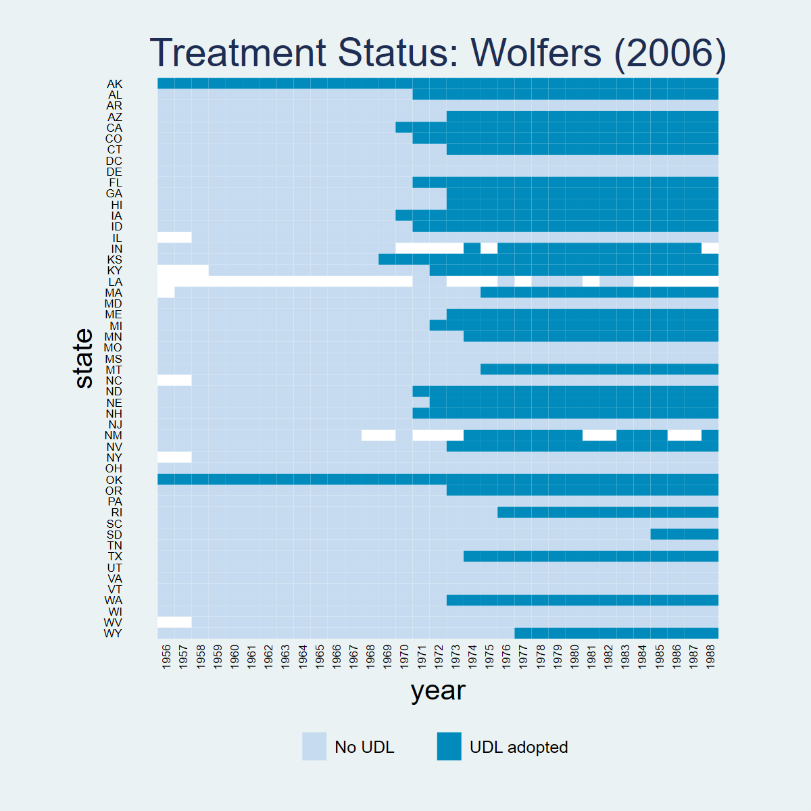
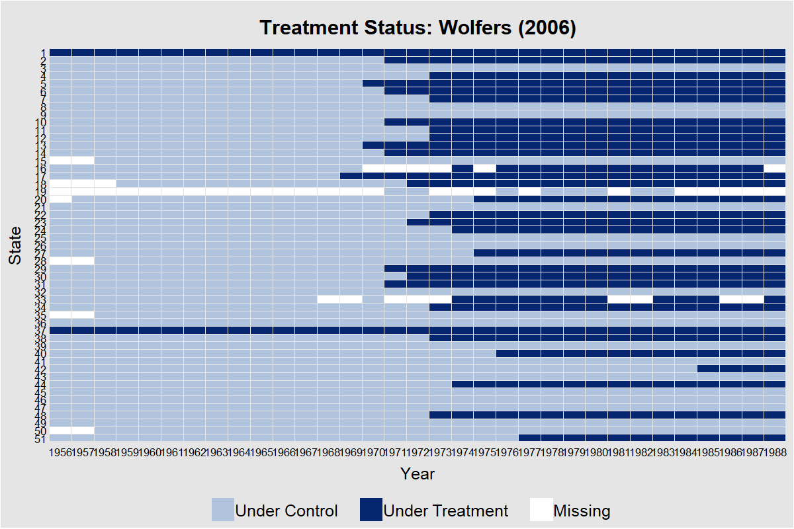
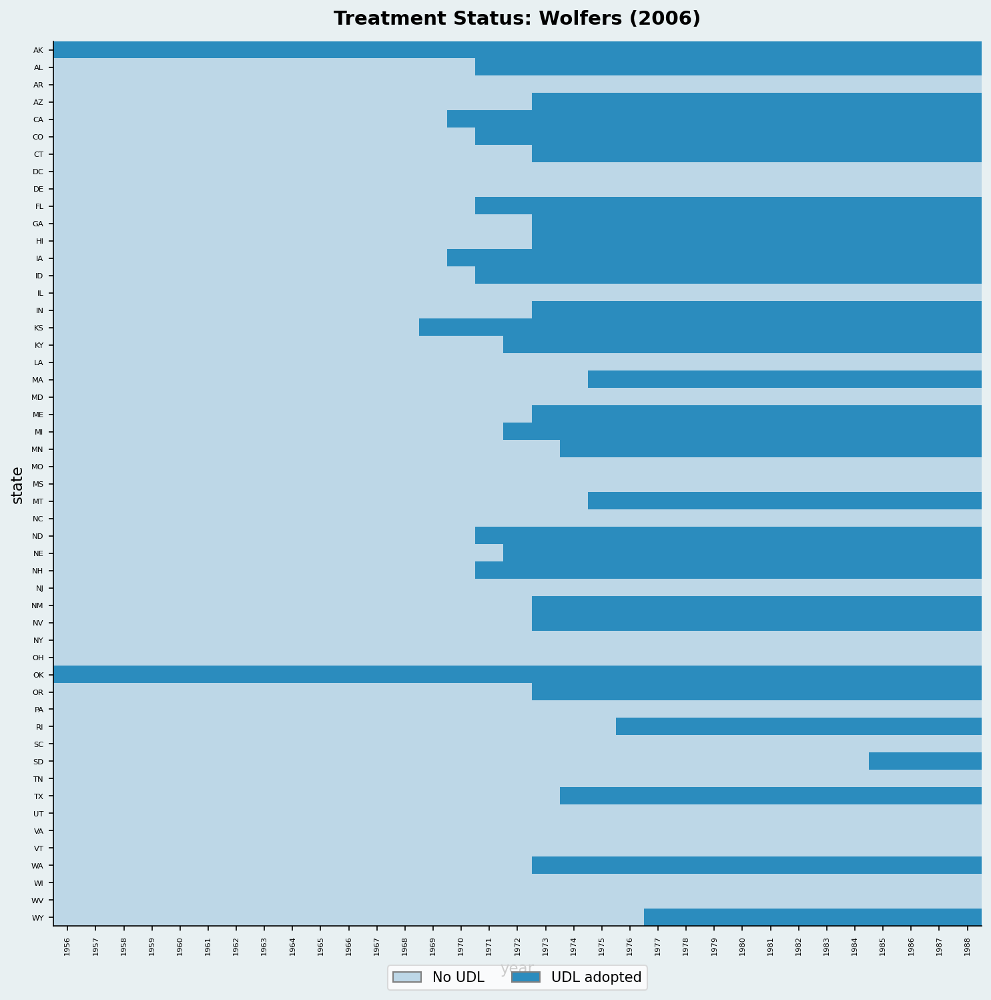
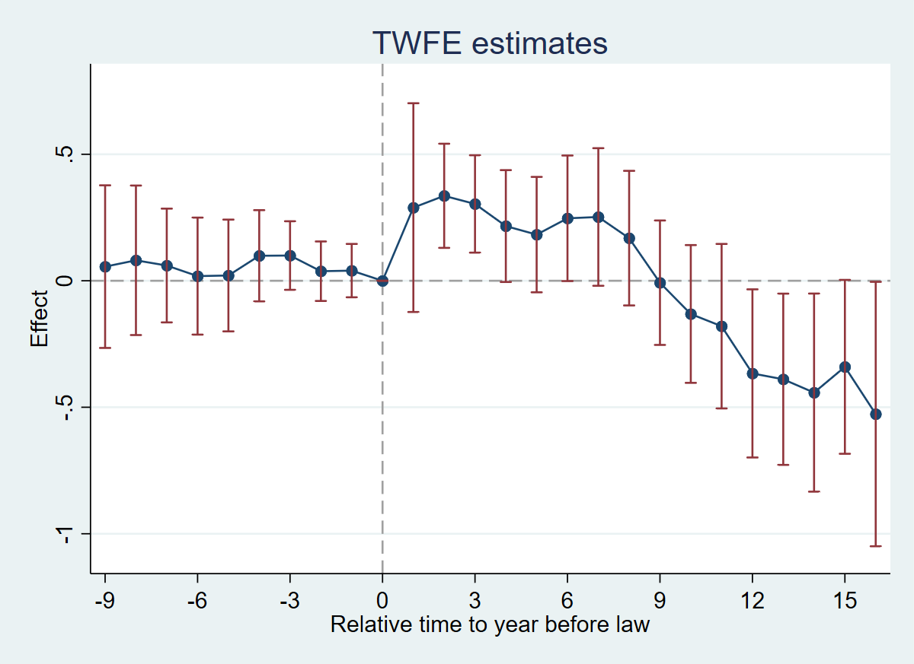
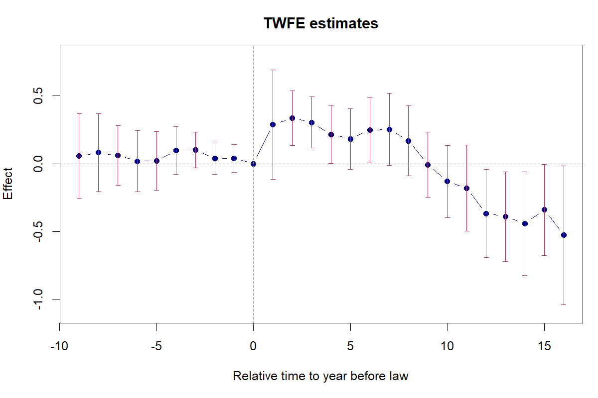
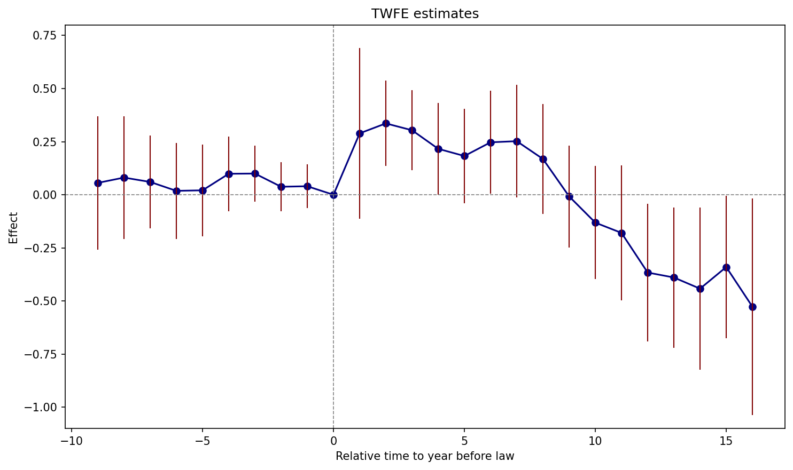
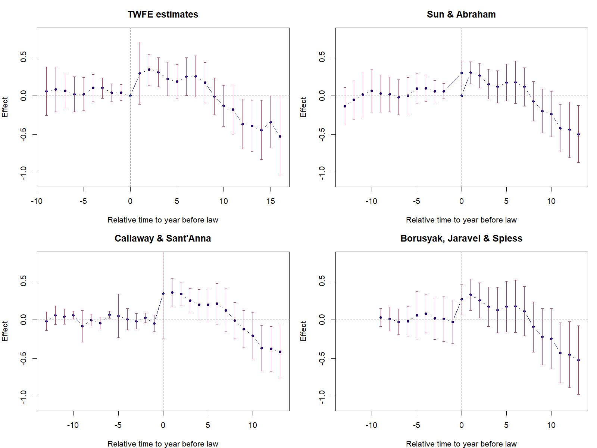
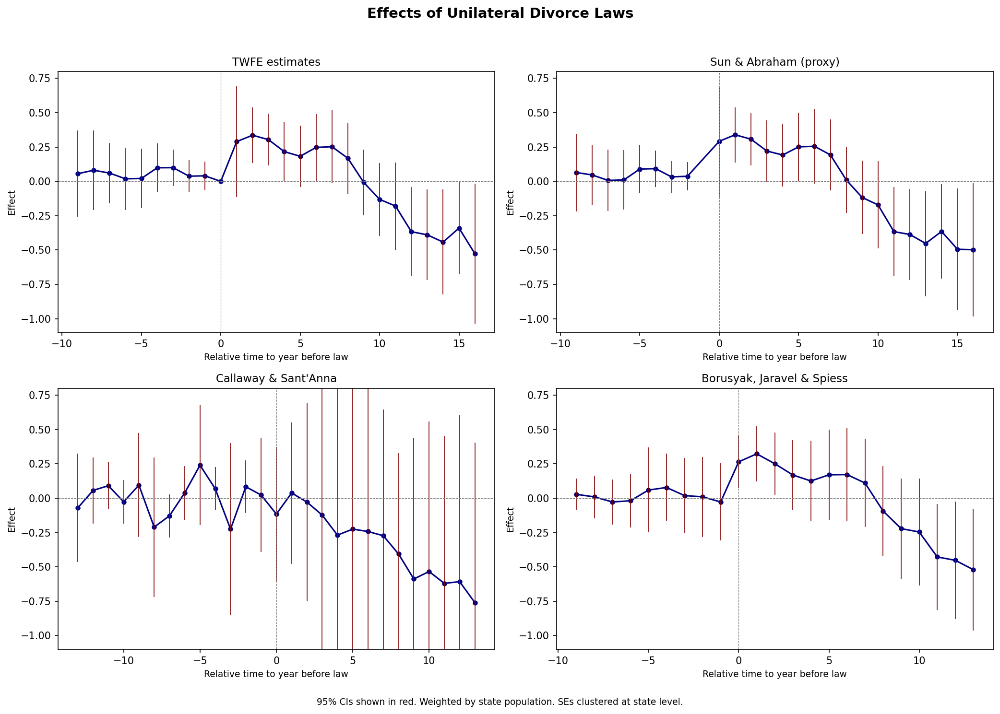

4 Chapter 6: Designs with Variation in Treatment Timing
4.1 Overview
Dataset: Wolfers (2006) — wolfers2006_didtextbook.dta
This chapter analyzes the effect of unilateral divorce laws (UDL) on divorce rates using a binary-and-staggered design. Between 1968 and 1988, 29 US states adopted UDLs. The panel covers 51 states from 1956 to 1988, with population weights and state-clustered standard errors throughout.
Key topics: decomposition of the static TWFE estimator, event-study TWFE, and four heterogeneity-robust estimators (Sun & Abraham, Callaway & Sant’Anna, de Chaisemartin & D’Haultfœuille, Borusyak et al.).
4.2 PanelView

* ssc install panelview, replace
copy "https://raw.githubusercontent.com/anzonyquispe/did_book/main/cc_xd_didtextbook_2025_9_30/Data%20sets/Wolfers%202006/wolfers2006_didtextbook.dta" "wolfers2006_didtextbook.dta", replace
use "wolfers2006_didtextbook.dta", clear
panelview div_rate udl, i(state) t(year) type(treat) title("Treatment Status: Wolfers (2006)") legend(label(1 "No UDL") label(2 "UDL adopted"))library(panelView)
load(url("https://raw.githubusercontent.com/anzonyquispe/did_book/main/cc_xd_didtextbook_2025_9_30/Data%20sets/Wolfers%202006/wolfers2006_didtextbook.RData"))
png("figures/ch06_panelview_R.png", width = 1000, height = 600)
panelview(div_rate ~ udl, data = df, index = c("state", "year"), type = "treat",
main = "Wolfers (2006)", ylab = "")
dev.off()

import pandas as pd
import matplotlib.pyplot as plt
import matplotlib.colors as mcolors
from matplotlib.patches import Patch
df = pd.read_parquet("https://raw.githubusercontent.com/anzonyquispe/did_book/main/cc_xd_didtextbook_2025_9_30/Data%20sets/Wolfers%202006/wolfers2006_didtextbook.parquet")
states_sorted = (df.groupby("state")["cohort"]
.first().sort_values(ascending=False).index)
state_idx = {s: i for i, s in enumerate(states_sorted)}
years = sorted(df["year"].unique())
fig, ax = plt.subplots(figsize=(14, 10))
cmap = mcolors.ListedColormap(["#4292C6", "#EF6548"])
for _, row in df.iterrows():
si = state_idx[row["state"]]
yi = years.index(row["year"])
color = 1 if row["udl"] == 1 else 0
ax.add_patch(plt.Rectangle((yi, si), 1, 1, color=cmap(color)))
ax.set_xlim(0, len(years)); ax.set_ylim(0, len(states_sorted))
ax.set_xticks(range(0, len(years), 5))
ax.set_xticklabels([str(int(years[i])) for i in range(0, len(years), 5)],
rotation=45, fontsize=7)
ax.set_yticks([i + 0.5 for i in range(len(states_sorted))])
ax.set_yticklabels(states_sorted, fontsize=6)
ax.set_xlabel("Year"); ax.set_ylabel("State")
ax.set_title("Treatment Status: Wolfers (2006)")
legend_elements = [Patch(facecolor="#4292C6", label="Control"),
Patch(facecolor="#EF6548", label="Treated")]
ax.legend(handles=legend_elements, loc="lower right")
plt.tight_layout()
plt.savefig(FIGDIR / "ch06_panelview_Python.png", dpi=150)4.3 6.2.1 Static TWFE Regression (GQ1)
Run the static TWFE regression of
div_rateon state and year FEs and the UDL treatment, weighting by population and clustering at the state level. Do UDLs have an effect on divorces?
copy "https://raw.githubusercontent.com/anzonyquispe/did_book/main/cc_xd_didtextbook_2025_9_30/Data%20sets/Wolfers%202006/wolfers2006_didtextbook.dta" "wolfers2006_didtextbook.dta", replace
use "wolfers2006_didtextbook.dta", clear
reg div_rate udl i.state i.year [w=stpop], vce(cluster state)Linear regression Number of obs = 1,631
R-squared = 0.9305
Root MSE = .52417
(Std. err. adjusted for 51 clusters in state)
------------------------------------------------------------------------------
| Robust
div_rate | Coefficient std. err. t P>|t| [95% conf. interval]
-------------+----------------------------------------------------------------
udl | -.0548378 .1507695 -0.36 0.718 -.3576673 .2479917
------------------------------------------------------------------------------library(haven); library(fixest)
load(url("https://raw.githubusercontent.com/anzonyquispe/did_book/main/cc_xd_didtextbook_2025_9_30/Data%20sets/Wolfers%202006/wolfers2006_didtextbook.RData"))
m1 <- feols(div_rate ~ udl + i(year) | state,
data = df, weights = ~stpop, cluster = ~state,
ssc = ssc(fixef.K = "full"))Variable Coefficient Std. err. t [95% Conf. Interval]
------------------------------------------------------------------------------------------
udl -0.0548378 0.1507695 -0.36 [ -0.3503461, 0.2406705]
N = 1631 | R-sq = 0.9305import pandas as pd
import pyfixest as pf
df = pd.read_parquet("https://raw.githubusercontent.com/anzonyquispe/did_book/main/cc_xd_didtextbook_2025_9_30/Data%20sets/Wolfers%202006/wolfers2006_didtextbook.parquet")
m1 = pf.feols('div_rate ~ udl + i(year) | state',
data=df, weights='stpop', vcov={'CRV1': 'state'},
ssc=pf.ssc(adj=True, fixef_k='full', cluster_adj=True))Variable Coefficient Std. err. t [95% Conf. Interval]
------------------------------------------------------------------------------------------
udl -0.0548378 0.1507695 -0.36 [ -0.3503461, 0.2406705]
N = 1631 | R-sq = 0.9305Interpretation: \(\hat{\beta}_{fe} = -0.055\) (s.e. = 0.15, p = 0.72). The coefficient is small and insignificant — according to this regression, UDLs do not affect divorce rates.
4.4 6.2.1 Decompose Static TWFE (GQ2)
Decompose \(\hat{\beta}_{fe}\) using
twowayfeweights. Does it estimate a convex combination of effects? Could it be biased for the ATT?
* ssc install twowayfeweights, replace
copy "https://raw.githubusercontent.com/anzonyquispe/did_book/main/cc_xd_didtextbook_2025_9_30/Data%20sets/Wolfers%202006/wolfers2006_didtextbook.dta" "wolfers2006_didtextbook.dta", replace
use "wolfers2006_didtextbook.dta", clear
twowayfeweights div_rate state year udl, type(feTR) test_random_weights(exposurelength) weight(stpop)Under the common trends assumption,
the TWFE coefficient beta, equal to -0.0548, estimates a weighted sum of 522 ATTs.
490 ATTs receive a positive weight, and 32 receive a negative weight.
------------------------------------------------
Treat. var: udl # ATTs Σ weights
------------------------------------------------
Positive weights 490 1.0259
Negative weights 32 -0.0259
------------------------------------------------
Total 522 1.0000
------------------------------------------------
Regression of variables possibly correlated with the treatment effect on the weights
Coef SE t-stat Correlation
exposurele~h -8.2883613 .21360588 -38.80212 -.73253245library(haven); library(TwoWayFEWeights)
load(url("https://raw.githubusercontent.com/anzonyquispe/did_book/main/cc_xd_didtextbook_2025_9_30/Data%20sets/Wolfers%202006/wolfers2006_didtextbook.RData"))
decomp2 <- twowayfeweights(df, "div_rate", "state", "year", "udl",
type = "feTR",
test_random_weights = "exposurelength",
weights = df$stpop)Under the common trends assumption,
beta estimates a weighted sum of 522 ATTs.
490 ATTs receive a positive weight, and 32 receive a negative weight.
Treat. var: udl ATTs Σ weights
Positive weights 490 1.0259
Negative weights 32 -0.0259
Total 522 1
Regression:
Coef SE t-stat Correlation
RW_exposurelength -8.288361 0.2136059 -38.80212 -0.7325324import pandas as pd
from twowayfeweights import twowayfeweights
df = pd.read_parquet("https://raw.githubusercontent.com/anzonyquispe/did_book/main/cc_xd_didtextbook_2025_9_30/Data%20sets/Wolfers%202006/wolfers2006_didtextbook.parquet")
result = twowayfeweights(df, "div_rate", "state", "year", "udl",
type="feTR", weights="stpop",
test_random_weights="exposurelength")Under the common trends assumption,
beta estimates a weighted sum of 522 ATTs.
490 ATTs receive a positive weight, and 32 receive a negative weight.
Sum of positive weights: 1.0259
Sum of negative weights: -0.0259
Regression of variables possibly correlated with the treatment effect on the weights
Coef SE t-stat Correlation
exposurelength -8.288361 0.213606 -38.8021 -0.732532Interpretation: Under parallel trends, \(\hat{\beta}_{fe}\) estimates a weighted sum of ATTs. The vast majority receive positive weights (sum ≈ 1.026) and 32 receive negative weights (sum ≈ −0.026) — an “almost convex” combination. However, weights are strongly negatively correlated with exposure length (corr = −0.73, t = −38.8): \(\hat{\beta}_{fe}\) heavily downweights long-run effects. It could differ from the ATT if treatment effects vary with length of exposure.
4.5 6.2.1.2 Bacon Decomposition (GQ2b)
Decompose the static TWFE estimator into its \(2\times2\) components using Goodman-Bacon (2021).
* ssc install bacondecomp, replace
copy "https://raw.githubusercontent.com/anzonyquispe/did_book/main/cc_xd_didtextbook_2025_9_30/Data%20sets/Wolfers%202006/wolfers2006_didtextbook.dta" "wolfers2006_didtextbook.dta", replace
use "wolfers2006_didtextbook.dta", clear
bacondecomp div_rate udl [aweight=stpop], ddetailBacon Decomposition
Overall DD Estimate = -0.4975
Number of observations = 1,631
Number of switchers = 51
------------------------------------------------------
Weight Avg DD Est
------------------------------------------------------
Within Type Sum Sum
------------------------------------------------------
Earlier T vs Later C 0.052 -3.577
Later T vs Earlier C 0.085 3.289
T vs Never treated 0.863 -0.335
------------------------------------------------------library(haven); library(bacondecomp)
load(url("https://raw.githubusercontent.com/anzonyquispe/did_book/main/cc_xd_didtextbook_2025_9_30/Data%20sets/Wolfers%202006/wolfers2006_didtextbook.RData"))
df_bal <- df[complete.cases(df[, c("div_rate", "state", "year", "udl")]), ]
bc <- bacon(div_rate ~ udl, data = df_bal,
id_var = "state", time_var = "year") type weight estimate
Earlier vs Later Treatment 0.052 -3.577
Later vs Earlier Treatment 0.085 3.289
Treated vs Untreated 0.863 -0.335Interpretation: The Bacon decomposition shows that the bulk of the weight (86.3%) comes from treated-vs-never-treated comparisons, which estimate a small negative effect (−0.335). The timing comparisons (“forbidden”) — earlier-vs-later and later-vs-earlier — carry small weight but have large, opposite-signed estimates (−3.577 vs 3.289), suggesting heterogeneous treatment effects across cohorts.
4.6 6.2.1.3 Test Randomized Treatment Timing (GQ3)
Test whether pre-treatment outcomes differ across early, late, and never adopters (excluding always-treated states, restricting to years ≤ 1968).
copy "https://raw.githubusercontent.com/anzonyquispe/did_book/main/cc_xd_didtextbook_2025_9_30/Data%20sets/Wolfers%202006/wolfers2006_didtextbook.dta" "wolfers2006_didtextbook.dta", replace
use "wolfers2006_didtextbook.dta", clear
reg div_rate i.early_late_never if cohort!=1956 & year<=1968 [w=stpop], vce(cluster state)Linear regression Number of obs = 611
F(2, 47) = 7.46
Prob > F = 0.0015
R-squared = 0.1707
(Std. err. adjusted for 48 clusters in state)
----------------------------------------------------------------------------------
| Robust
div_rate | Coefficient std. err. t P>|t| [95% conf. interval]
-----------------+----------------------------------------------------------------
early_late_never |
2 | -.0457088 .4927483 -0.09 0.926 -1.03699 .9455728
3 | -1.363398 .3751166 -3.63 0.001 -2.118035 -.608761
|
_cons | 3.054891 .2584305 11.82 0.000 2.534996 3.574786
----------------------------------------------------------------------------------library(haven)
load(url("https://raw.githubusercontent.com/anzonyquispe/did_book/main/cc_xd_didtextbook_2025_9_30/Data%20sets/Wolfers%202006/wolfers2006_didtextbook.RData"))
df3 <- df %>% filter(cohort != 1956, year <= 1968)
m3 <- feols(div_rate ~ i(early_late_never),
data = df3, weights = ~stpop, cluster = ~state,
ssc = ssc(fixef.K = "full"))Variable Coefficient Std. err. t [95% Conf. Interval]
------------------------------------------------------------------------------------------
(Intercept) 3.0548909 0.2584305 11.82 [ 2.5483670, 3.5614147]
early_late_never::2 -0.0457088 0.4927483 -0.09 [ -1.0114954, 0.9200777]
early_late_never::3 -1.3633981 0.3751166 -3.63 [ -2.0986266, -0.6281697]
N = 611 | R-sq = 0.1707import pandas as pd
df = pd.read_parquet("https://raw.githubusercontent.com/anzonyquispe/did_book/main/cc_xd_didtextbook_2025_9_30/Data%20sets/Wolfers%202006/wolfers2006_didtextbook.parquet")
df3 = df[(df['cohort'] != 1956) & (df['year'] <= 1968)].copy()
m3 = pf.feols('div_rate ~ C(early_late_never)',
data=df3, weights='stpop', vcov={'CRV1': 'state'},
ssc=pf.ssc(adj=True, fixef_k='full', cluster_adj=True))Variable Coefficient Std. err. t [95% Conf. Interval]
------------------------------------------------------------------------------------------
Intercept 3.0548909 0.2584305 11.82 [ 2.5483670, 3.5614147]
C(early_late_never)[T.2.0] -0.0457088 0.4927483 -0.09 [ -1.0114954, 0.9200777]
C(early_late_never)[T.3.0] -1.3633981 0.3751166 -3.63 [ -2.0986266, -0.6281697]
N = 611 | R-sq = 0.1707Interpretation: F-test p-value = 0.0015 — we reject that pre-treatment outcomes are the same across groups. Treatment timing is not randomly assigned: never-adopters have significantly lower divorce rates before any state adopts a UDL.
4.7 6.2.2.1 Event-Study TWFE Regression (GQ4)
Run the event-study TWFE regression with
rel_timeindicators. Test pre-trends jointly.
copy "https://raw.githubusercontent.com/anzonyquispe/did_book/main/cc_xd_didtextbook_2025_9_30/Data%20sets/Wolfers%202006/wolfers2006_didtextbook.dta" "wolfers2006_didtextbook.dta", replace
use "wolfers2006_didtextbook.dta", clear
reg div_rate rel_time* i.state i.year [w=stpop], vce(cluster state)
test rel_timeminus1-rel_timeminus9 (Std. err. adjusted for 51 clusters in state)
--------------------------------------------------------------------------------
| Robust
div_rate | Coefficient std. err. t P>|t| [95% conf. interval]
---------------+----------------------------------------------------------------
rel_time1 | .2891561 .2054259 1.41 0.165 -.1234539 .7017661
rel_time2 | .3358503 .1024966 3.28 0.002 .1299798 .5417208
rel_time3 | .3037197 .0958368 3.17 0.003 .1112258 .4962136
rel_time4 | .2162947 .1100871 1.96 0.055 -.0048218 .4374112
rel_time5 | .1824478 .1135503 1.61 0.114 -.0456248 .4105203
rel_time6 | .2469589 .1235802 2.00 0.051 -.0012592 .4951769
rel_time7 | .2521922 .1354015 1.86 0.068 -.0197698 .5241541
rel_time8 | .1684823 .1324744 1.27 0.209 -.0976004 .434565
rel_time9 | -.007686 .1224421 -0.06 0.950 -.2536183 .2382463
rel_time10 | -.1312296 .135582 -0.97 0.338 -.4035541 .1410948
rel_time11 | -.1795675 .1618587 -1.11 0.273 -.5046704 .1455353
rel_time12 | -.3662379 .165442 -2.21 0.031 -.698538 -.0339379
rel_time13 | -.3894262 .1685244 -2.31 0.025 -.7279175 -.0509349
rel_time14 | -.4421197 .1949527 -2.27 0.028 -.8336937 -.0505457
rel_time15 | -.3402803 .1710816 -1.99 0.052 -.6839078 .0033472
rel_time16 | -.526895 .2602054 -2.02 0.048 -1.049533 -.0042572
rel_timeminus1 | .0401147 .0525088 0.76 0.448 -.0653522 .1455817
rel_timeminus2 | .0377587 .058556 0.64 0.522 -.0798546 .1553719
rel_timeminus3 | .0997316 .0674681 1.48 0.146 -.0357821 .2352453
rel_timeminus4 | .0988424 .0897758 1.10 0.276 -.0814777 .2791625
rel_timeminus5 | .020862 .1099841 0.19 0.850 -.2000476 .2417716
rel_timeminus6 | .0183927 .1151678 0.16 0.874 -.2129287 .2497141
rel_timeminus7 | .0602846 .1119554 0.54 0.593 -.1645845 .2851537
rel_timeminus8 | .0808726 .1471298 0.55 0.585 -.2146462 .3763915
rel_timeminus9 | .0558855 .1600016 0.35 0.728 -.2654871 .3772581
---------------+----------------------------------------------------------------
F( 9, 50) = 0.51
Prob > F = 0.8631library(haven)
load(url("https://raw.githubusercontent.com/anzonyquispe/did_book/main/cc_xd_didtextbook_2025_9_30/Data%20sets/Wolfers%202006/wolfers2006_didtextbook.RData"))
rt_vars <- c(paste0("rel_time", 1:16), paste0("rel_timeminus", 1:9))
rt_formula <- as.formula(paste("div_rate ~", paste(rt_vars, collapse = " + "),
"+ i(year) | state"))
m4 <- feols(rt_formula, data = df, weights = ~stpop, cluster = ~state,
ssc = ssc(fixef.K = "full"))
wald(m4, keep = paste0("rel_timeminus", 1:9))Variable Coefficient Std. err. t [95% Conf. Interval]
------------------------------------------------------------------------------------------
rel_time1 0.2891561 0.2054259 1.41 [ -0.1134786, 0.6917908]
rel_time2 0.3358503 0.1024966 3.28 [ 0.1349569, 0.5367437]
rel_time3 0.3037197 0.0958368 3.17 [ 0.1158795, 0.4915599]
rel_time4 0.2162947 0.1100871 1.96 [ 0.0005240, 0.4320654]
rel_time5 0.1824478 0.1135503 1.61 [ -0.0401109, 0.4050064]
rel_time6 0.2469589 0.1235802 2.00 [ 0.0047418, 0.4891760]
rel_time7 0.2521922 0.1354015 1.86 [ -0.0131948, 0.5175791]
rel_time8 0.1684823 0.1324744 1.27 [ -0.0911675, 0.4281321]
rel_time9 -0.0076860 0.1224421 -0.06 [ -0.2476726, 0.2323006]
rel_time10 -0.1312296 0.1355820 -0.97 [ -0.3969703, 0.1345111]
rel_time11 -0.1795675 0.1618587 -1.11 [ -0.4968107, 0.1376756]
rel_time12 -0.3662379 0.1654420 -2.21 [ -0.6905043, -0.0419716]
rel_time13 -0.3894262 0.1685244 -2.31 [ -0.7197342, -0.0591183]
rel_time14 -0.4421197 0.1949527 -2.27 [ -0.8242270, -0.0600124]
rel_time15 -0.3402803 0.1710816 -1.99 [ -0.6756002, -0.0049604]
rel_time16 -0.5268950 0.2602054 -2.02 [ -1.0368975, -0.0168925]
rel_timeminus1 0.0401147 0.0525088 0.76 [ -0.0628025, 0.1430319]
rel_timeminus2 0.0377587 0.0585560 0.64 [ -0.0770112, 0.1525285]
rel_timeminus3 0.0997316 0.0674681 1.48 [ -0.0325059, 0.2319691]
rel_timeminus4 0.0988424 0.0897758 1.10 [ -0.0771182, 0.2748030]
rel_timeminus5 0.0208620 0.1099841 0.19 [ -0.1947069, 0.2364309]
rel_timeminus6 0.0183927 0.1151678 0.16 [ -0.2073362, 0.2441217]
rel_timeminus7 0.0602846 0.1119554 0.54 [ -0.1591481, 0.2797173]
rel_timeminus8 0.0808726 0.1471298 0.55 [ -0.2075017, 0.3692470]
rel_timeminus9 0.0558855 0.1600016 0.35 [ -0.2577175, 0.3694885]
N = 1631 | R-sq = 0.9351
Wald test: stat = 0.506103, p-value = 0.870968, on 9 and 1,523 DoFimport pandas as pd
df = pd.read_parquet("https://raw.githubusercontent.com/anzonyquispe/did_book/main/cc_xd_didtextbook_2025_9_30/Data%20sets/Wolfers%202006/wolfers2006_didtextbook.parquet")
rt_pos = [c for c in df.columns if c.startswith("rel_time") and "minus" not in c]
rt_neg = [c for c in df.columns if "rel_timeminus" in c]
fml = "div_rate ~ " + " + ".join(rt_pos + rt_neg) + " + i(year) | state"
m4 = pf.feols(fml, data=df, weights='stpop', vcov={'CRV1': 'state'},
ssc=pf.ssc(adj=True, fixef_k='full', cluster_adj=True))Variable Coefficient Std. err. t [95% Conf. Interval]
------------------------------------------------------------------------------------------
rel_time1 0.2891561 0.2054259 1.41 [ -0.1134786, 0.6917908]
rel_time2 0.3358503 0.1024966 3.28 [ 0.1349569, 0.5367437]
rel_time3 0.3037197 0.0958368 3.17 [ 0.1158795, 0.4915599]
rel_time4 0.2162947 0.1100871 1.96 [ 0.0005240, 0.4320654]
rel_time5 0.1824478 0.1135503 1.61 [ -0.0401109, 0.4050064]
rel_time6 0.2469589 0.1235802 2.00 [ 0.0047418, 0.4891760]
rel_time7 0.2521922 0.1354015 1.86 [ -0.0131948, 0.5175791]
rel_time8 0.1684823 0.1324744 1.27 [ -0.0911675, 0.4281321]
rel_time9 -0.0076860 0.1224421 -0.06 [ -0.2476726, 0.2323006]
rel_time10 -0.1312296 0.1355820 -0.97 [ -0.3969703, 0.1345111]
rel_time11 -0.1795675 0.1618587 -1.11 [ -0.4968107, 0.1376756]
rel_time12 -0.3662379 0.1654420 -2.21 [ -0.6905043, -0.0419716]
rel_time13 -0.3894262 0.1685244 -2.31 [ -0.7197342, -0.0591183]
rel_time14 -0.4421197 0.1949527 -2.27 [ -0.8242270, -0.0600124]
rel_time15 -0.3402803 0.1710816 -1.99 [ -0.6756002, -0.0049604]
rel_time16 -0.5268950 0.2602054 -2.02 [ -1.0368975, -0.0168925]
rel_timeminus1 0.0401147 0.0525088 0.76 [ -0.0628025, 0.1430319]
rel_timeminus2 0.0377587 0.0585560 0.64 [ -0.0770112, 0.1525285]
rel_timeminus3 0.0997316 0.0674681 1.48 [ -0.0325059, 0.2319691]
rel_timeminus4 0.0988424 0.0897758 1.10 [ -0.0771182, 0.2748030]
rel_timeminus5 0.0208620 0.1099841 0.19 [ -0.1947069, 0.2364309]
rel_timeminus6 0.0183927 0.1151678 0.16 [ -0.2073362, 0.2441217]
rel_timeminus7 0.0602846 0.1119554 0.54 [ -0.1591481, 0.2797173]
rel_timeminus8 0.0808726 0.1471298 0.55 [ -0.2075017, 0.3692470]
rel_timeminus9 0.0558855 0.1600016 0.35 [ -0.2577175, 0.3694885]
N = 1631 | R-sq = 0.9351Interpretation: Pre-trends are individually and jointly insignificant (F(9, 50) = 0.51, p = 0.86). Post-treatment effects are positive for the first ~8 years, then turn negative after year 9.
4.8 6.2.2.4 Event-Study Weights (eventstudyweights)
An alternative to
twowayfeweightsfor decomposing event-study coefficients iseventstudyweights(Sun & Abraham, 2021), which computes the cohort-specific weights underlying each event-study coefficient.
* ssc install eventstudyweights, replace
copy "https://raw.githubusercontent.com/anzonyquispe/did_book/main/cc_xd_didtextbook_2025_9_30/Data%20sets/Wolfers%202006/wolfers2006_didtextbook.dta" "wolfers2006_didtextbook.dta", replace
use "wolfers2006_didtextbook.dta", clear
eventstudyweights rel_time1-rel_time16 rel_timeminus1-rel_timeminus9 [aweight=stpop], absorb(i.state i.year) cohort(cohort) control_cohort(controlgroup) saveweights(Ws)Note: eventstudyweights produces a large weight matrix (396 × 27) showing how each cohort-by-period cell contributes to the TWFE event-study coefficients. Due to its size, the full output is omitted here. The command confirms that TWFE event-study coefficients can be expressed as weighted averages of cohort-specific effects, with weights that may be negative — motivating the use of robust estimators like Sun & Abraham (2021).
4.9 6.2.2.5 Decompose \(\hat{\beta}_1^{fe}\) (GQ5)
Decompose the first event-study coefficient \(\hat{\beta}_1^{fe}\) using
twowayfeweightswith other treatments and controls.
* ssc install twowayfeweights, replace
copy "https://raw.githubusercontent.com/anzonyquispe/did_book/main/cc_xd_didtextbook_2025_9_30/Data%20sets/Wolfers%202006/wolfers2006_didtextbook.dta" "wolfers2006_didtextbook.dta", replace
use "wolfers2006_didtextbook.dta", clear
twowayfeweights div_rate state year rel_time1, type(feTR) test_random_weights(year) weight(stpop) other_treatments(rel_time2-rel_time16) controls(rel_timeminus1-rel_timeminus9)Under the common trends assumption,
the TWFE coefficient beta, equal to 0.2892, estimates the sum of several terms.
The first term is a weighted sum of 27 ATTs of the treatment.
27 ATTs receive a positive weight, and 0 receive a negative weight.
------------------------------------------------
Treat. var: rel_time1 # ATTs Σ weights
------------------------------------------------
Positive weights 27 1.0000
Negative weights 0 0.0000
------------------------------------------------
Total 27 1.0000
------------------------------------------------
The next term is a weighted sum of 29 ATTs of treatment 1 included in the other_treatments option.
16 ATTs receive a positive weight, and 13 receive a negative weight.
------------------------------------------------
Other treat.: rel_time2 # ATTs Σ weights
------------------------------------------------
Positive weights 16 0.0119
Negative weights 13 -0.0119
------------------------------------------------
Total 29 -0.0000
------------------------------------------------
The next term is a weighted sum of 28 ATTs of treatment 2 included in the other_treatments option.
10 ATTs receive a positive weight, and 18 receive a negative weight.
------------------------------------------------
Other treat.: rel_time3 # ATTs Σ weights
------------------------------------------------
Positive weights 10 0.0102
Negative weights 18 -0.0102
------------------------------------------------
Total 28 0.0000
------------------------------------------------
The next term is a weighted sum of 30 ATTs of treatment 3 included in the other_treatments option.
21 ATTs receive a positive weight, and 9 receive a negative weight.
------------------------------------------------
Other treat.: rel_time4 # ATTs Σ weights
------------------------------------------------
Positive weights 21 0.0083
Negative weights 9 -0.0083
------------------------------------------------
Total 30 0.0000
------------------------------------------------
The next term is a weighted sum of 29 ATTs of treatment 4 included in the other_treatments option.
21 ATTs receive a positive weight, and 8 receive a negative weight.
------------------------------------------------
Other treat.: rel_time5 # ATTs Σ weights
------------------------------------------------
Positive weights 21 0.0105
Negative weights 8 -0.0105
------------------------------------------------
Total 29 -0.0000
------------------------------------------------
The next term is a weighted sum of 29 ATTs of treatment 5 included in the other_treatments option.
26 ATTs receive a positive weight, and 3 receive a negative weight.
------------------------------------------------
Other treat.: rel_time6 # ATTs Σ weights
------------------------------------------------
Positive weights 26 0.0065
Negative weights 3 -0.0065
------------------------------------------------
Total 29 0.0000
------------------------------------------------
The next term is a weighted sum of 29 ATTs of treatment 6 included in the other_treatments option.
19 ATTs receive a positive weight, and 10 receive a negative weight.
------------------------------------------------
Other treat.: rel_time7 # ATTs Σ weights
------------------------------------------------
Positive weights 19 0.0023
Negative weights 10 -0.0023
------------------------------------------------
Total 29 0.0000
------------------------------------------------
The next term is a weighted sum of 29 ATTs of treatment 7 included in the other_treatments option.
19 ATTs receive a positive weight, and 10 receive a negative weight.
------------------------------------------------
Other treat.: rel_time8 # ATTs Σ weights
------------------------------------------------
Positive weights 19 0.0017
Negative weights 10 -0.0017
------------------------------------------------
Total 29 0.0000
------------------------------------------------
The next term is a weighted sum of 28 ATTs of treatment 8 included in the other_treatments option.
17 ATTs receive a positive weight, and 11 receive a negative weight.
------------------------------------------------
Other treat.: rel_time9 # ATTs Σ weights
------------------------------------------------
Positive weights 17 0.0011
Negative weights 11 -0.0011
------------------------------------------------
Total 28 0.0000
------------------------------------------------
The next term is a weighted sum of 28 ATTs of treatment 9 included in the other_treatments option.
14 ATTs receive a positive weight, and 14 receive a negative weight.
------------------------------------------------
Other treat.: rel_time10# ATTs Σ weights
------------------------------------------------
Positive weights 14 0.0009
Negative weights 14 -0.0009
------------------------------------------------
Total 28 0.0000
------------------------------------------------
The next term is a weighted sum of 29 ATTs of treatment 10 included in the other_treatments option.
13 ATTs receive a positive weight, and 16 receive a negative weight.
------------------------------------------------
Other treat.: rel_time11# ATTs Σ weights
------------------------------------------------
Positive weights 13 0.0009
Negative weights 16 -0.0009
------------------------------------------------
Total 29 0.0000
------------------------------------------------
The next term is a weighted sum of 29 ATTs of treatment 11 included in the other_treatments option.
17 ATTs receive a positive weight, and 12 receive a negative weight.
------------------------------------------------
Other treat.: rel_time12# ATTs Σ weights
------------------------------------------------
Positive weights 17 0.0010
Negative weights 12 -0.0010
------------------------------------------------
Total 29 0.0000
------------------------------------------------
The next term is a weighted sum of 28 ATTs of treatment 12 included in the other_treatments option.
17 ATTs receive a positive weight, and 11 receive a negative weight.
------------------------------------------------
Other treat.: rel_time13# ATTs Σ weights
------------------------------------------------
Positive weights 17 0.0010
Negative weights 11 -0.0010
------------------------------------------------
Total 28 0.0000
------------------------------------------------
The next term is a weighted sum of 26 ATTs of treatment 13 included in the other_treatments option.
13 ATTs receive a positive weight, and 13 receive a negative weight.
------------------------------------------------
Other treat.: rel_time14# ATTs Σ weights
------------------------------------------------
Positive weights 13 0.0007
Negative weights 13 -0.0007
------------------------------------------------
Total 26 0.0000
------------------------------------------------
The next term is a weighted sum of 24 ATTs of treatment 14 included in the other_treatments option.
11 ATTs receive a positive weight, and 13 receive a negative weight.
------------------------------------------------
Other treat.: rel_time15# ATTs Σ weights
------------------------------------------------
Positive weights 11 0.0012
Negative weights 13 -0.0012
------------------------------------------------
Total 24 0.0000
------------------------------------------------
The next term is a weighted sum of 100 ATTs of treatment 15 included in the other_treatments option.
65 ATTs receive a positive weight, and 35 receive a negative weight.
------------------------------------------------
Other treat.: rel_time16# ATTs Σ weights
------------------------------------------------
Positive weights 65 0.0068
Negative weights 35 -0.0068
------------------------------------------------
Total 100 0.0000
------------------------------------------------
Regression of variables on the weights attached to the treatment
Coef SE t-stat Correlation
year -15.333901 13.428752 -1.1418709 -.23224592library(haven); library(TwoWayFEWeights)
load(url("https://raw.githubusercontent.com/anzonyquispe/did_book/main/cc_xd_didtextbook_2025_9_30/Data%20sets/Wolfers%202006/wolfers2006_didtextbook.RData"))
rel_time_vars <- names(df)[grepl("^rel_time", names(df))]
other_rel_times <- rel_time_vars[rel_time_vars != "rel_time1"]
other_treatments <- other_rel_times[grepl("^rel_time[2-9]$|^rel_time1[0-6]$", other_rel_times)]
controls <- other_rel_times[grepl("minus", other_rel_times)]
decomp5 <- twowayfeweights(df, "div_rate", "state", "year", "rel_time1",
type = "feTR", test_random_weights = "year",
weights = df$stpop,
other_treatments = other_treatments,
controls = controls)Under the common trends assumption,
the TWFE coefficient beta estimates the sum of several terms.
The first term is a weighted sum of 27 ATTs of the treatment.
27 ATTs receive a positive weight, and 0 receive a negative weight.
------------------------------------------------
Treat. var: rel_time1 # ATTs Σ weights
------------------------------------------------
Positive weights 27 0.8724
Negative weights 0 0.0000
------------------------------------------------
Total 27 0.8724
------------------------------------------------
The next term is a weighted sum of 29 ATTs of treatment 1 included in the other_treatments option.
16 ATTs receive a positive weight, and 13 receive a negative weight.
------------------------------------------------
Other treat.: rel_time2 # ATTs Σ weights
------------------------------------------------
Positive weights 16 0.0104
Negative weights 13 -0.0104
------------------------------------------------
Total 29 -0.0000
------------------------------------------------
The next term is a weighted sum of 28 ATTs of treatment 2 included in the other_treatments option.
10 ATTs receive a positive weight, and 18 receive a negative weight.
------------------------------------------------
Other treat.: rel_time3 # ATTs Σ weights
------------------------------------------------
Positive weights 10 0.0089
Negative weights 18 -0.0089
------------------------------------------------
Total 28 0.0000
------------------------------------------------
The next term is a weighted sum of 30 ATTs of treatment 3 included in the other_treatments option.
21 ATTs receive a positive weight, and 9 receive a negative weight.
------------------------------------------------
Other treat.: rel_time4 # ATTs Σ weights
------------------------------------------------
Positive weights 21 0.0073
Negative weights 9 -0.0073
------------------------------------------------
Total 30 0.0000
------------------------------------------------
The next term is a weighted sum of 29 ATTs of treatment 4 included in the other_treatments option.
21 ATTs receive a positive weight, and 8 receive a negative weight.
------------------------------------------------
Other treat.: rel_time5 # ATTs Σ weights
------------------------------------------------
Positive weights 21 0.0092
Negative weights 8 -0.0092
------------------------------------------------
Total 29 -0.0000
------------------------------------------------
The next term is a weighted sum of 29 ATTs of treatment 5 included in the other_treatments option.
26 ATTs receive a positive weight, and 3 receive a negative weight.
------------------------------------------------
Other treat.: rel_time6 # ATTs Σ weights
------------------------------------------------
Positive weights 26 0.0057
Negative weights 3 -0.0057
------------------------------------------------
Total 29 0.0000
------------------------------------------------
The next term is a weighted sum of 29 ATTs of treatment 6 included in the other_treatments option.
19 ATTs receive a positive weight, and 10 receive a negative weight.
------------------------------------------------
Other treat.: rel_time7 # ATTs Σ weights
------------------------------------------------
Positive weights 19 0.0020
Negative weights 10 -0.0020
------------------------------------------------
Total 29 0.0000
------------------------------------------------
The next term is a weighted sum of 29 ATTs of treatment 7 included in the other_treatments option.
19 ATTs receive a positive weight, and 10 receive a negative weight.
------------------------------------------------
Other treat.: rel_time8 # ATTs Σ weights
------------------------------------------------
Positive weights 19 0.0014
Negative weights 10 -0.0014
------------------------------------------------
Total 29 0.0000
------------------------------------------------
The next term is a weighted sum of 28 ATTs of treatment 8 included in the other_treatments option.
17 ATTs receive a positive weight, and 11 receive a negative weight.
------------------------------------------------
Other treat.: rel_time9 # ATTs Σ weights
------------------------------------------------
Positive weights 17 0.0009
Negative weights 11 -0.0009
------------------------------------------------
Total 28 0.0000
------------------------------------------------
The next term is a weighted sum of 28 ATTs of treatment 9 included in the other_treatments option.
14 ATTs receive a positive weight, and 14 receive a negative weight.
------------------------------------------------
Other treat.: rel_time10# ATTs Σ weights
------------------------------------------------
Positive weights 14 0.0008
Negative weights 14 -0.0008
------------------------------------------------
Total 28 0.0000
------------------------------------------------
The next term is a weighted sum of 29 ATTs of treatment 10 included in the other_treatments option.
13 ATTs receive a positive weight, and 16 receive a negative weight.
------------------------------------------------
Other treat.: rel_time11# ATTs Σ weights
------------------------------------------------
Positive weights 13 0.0008
Negative weights 16 -0.0008
------------------------------------------------
Total 29 0.0000
------------------------------------------------
The next term is a weighted sum of 29 ATTs of treatment 11 included in the other_treatments option.
17 ATTs receive a positive weight, and 12 receive a negative weight.
------------------------------------------------
Other treat.: rel_time12# ATTs Σ weights
------------------------------------------------
Positive weights 17 0.0008
Negative weights 12 -0.0008
------------------------------------------------
Total 29 0.0000
------------------------------------------------
The next term is a weighted sum of 28 ATTs of treatment 12 included in the other_treatments option.
17 ATTs receive a positive weight, and 11 receive a negative weight.
------------------------------------------------
Other treat.: rel_time13# ATTs Σ weights
------------------------------------------------
Positive weights 17 0.0009
Negative weights 11 -0.0009
------------------------------------------------
Total 28 0.0000
------------------------------------------------
The next term is a weighted sum of 26 ATTs of treatment 13 included in the other_treatments option.
13 ATTs receive a positive weight, and 13 receive a negative weight.
------------------------------------------------
Other treat.: rel_time14# ATTs Σ weights
------------------------------------------------
Positive weights 13 0.0006
Negative weights 13 -0.0006
------------------------------------------------
Total 26 0.0000
------------------------------------------------
The next term is a weighted sum of 24 ATTs of treatment 14 included in the other_treatments option.
11 ATTs receive a positive weight, and 13 receive a negative weight.
------------------------------------------------
Other treat.: rel_time15# ATTs Σ weights
------------------------------------------------
Positive weights 11 0.0010
Negative weights 13 -0.0010
------------------------------------------------
Total 24 0.0000
------------------------------------------------
The next term is a weighted sum of 100 ATTs of treatment 15 included in the other_treatments option.
65 ATTs receive a positive weight, and 35 receive a negative weight.
------------------------------------------------
Other treat.: rel_time16# ATTs Σ weights
------------------------------------------------
Positive weights 65 0.0059
Negative weights 35 -0.0059
------------------------------------------------
Total 100 0.0000
------------------------------------------------
Regression of variables on the weights attached to the treatment
Coef SE t-stat Correlation
RW_year -17.577563 15.393686 -1.141869 -0.232246
Note: Stata normalizes weights to sum to 1 (Σ = 1.0000),
while R reports raw weights (Σ = 0.8724). Structure is identical.import pandas as pd
from twowayfeweights import twowayfeweights
import re
df = pd.read_parquet("https://raw.githubusercontent.com/anzonyquispe/did_book/main/cc_xd_didtextbook_2025_9_30/Data%20sets/Wolfers%202006/wolfers2006_didtextbook.parquet")
rel_time_vars = [c for c in df.columns if c.startswith("rel_time")]
other_rel_times = [c for c in rel_time_vars if c != "rel_time1"]
other_treatments = [c for c in other_rel_times
if re.match(r"^rel_time[2-9]$|^rel_time1[0-6]$", c)]
controls = [c for c in other_rel_times if "minus" in c]
result5 = twowayfeweights(df, "div_rate", "state", "year", "rel_time1",
type="feTR", test_random_weights="year",
weights="stpop",
other_treatments=other_treatments,
controls=controls)Under the common trends assumption,
the TWFE coefficient beta, equal to 0.2892, estimates the sum of several terms.
The first term is a weighted sum of 27 ATTs of the treatment.
27 ATTs receive a positive weight, and 0 receive a negative weight.
------------------------------------------------
Treat. var: rel_time1 # ATTs Σ weights
------------------------------------------------
Positive weights 27 0.8724
Negative weights 0 0.0000
------------------------------------------------
Total 27 0.8724
------------------------------------------------
The next term is a weighted sum of 29 ATTs of treatment 1 included in the other_treatments option.
16 ATTs receive a positive weight, and 13 receive a negative weight.
------------------------------------------------
Other treat.: rel_time2 # ATTs Σ weights
------------------------------------------------
Positive weights 16 0.0104
Negative weights 13 -0.0104
------------------------------------------------
Total 29 0.0000
------------------------------------------------
The next term is a weighted sum of 28 ATTs of treatment 2 included in the other_treatments option.
10 ATTs receive a positive weight, and 18 receive a negative weight.
------------------------------------------------
Other treat.: rel_time3 # ATTs Σ weights
------------------------------------------------
Positive weights 10 0.0089
Negative weights 18 -0.0089
------------------------------------------------
Total 28 0.0000
------------------------------------------------
The next term is a weighted sum of 30 ATTs of treatment 3 included in the other_treatments option.
21 ATTs receive a positive weight, and 9 receive a negative weight.
------------------------------------------------
Other treat.: rel_time4 # ATTs Σ weights
------------------------------------------------
Positive weights 21 0.0072
Negative weights 9 -0.0072
------------------------------------------------
Total 30 0.0000
------------------------------------------------
The next term is a weighted sum of 29 ATTs of treatment 4 included in the other_treatments option.
21 ATTs receive a positive weight, and 8 receive a negative weight.
------------------------------------------------
Other treat.: rel_time5 # ATTs Σ weights
------------------------------------------------
Positive weights 21 0.0091
Negative weights 8 -0.0091
------------------------------------------------
Total 29 0.0000
------------------------------------------------
The next term is a weighted sum of 29 ATTs of treatment 5 included in the other_treatments option.
26 ATTs receive a positive weight, and 3 receive a negative weight.
------------------------------------------------
Other treat.: rel_time6 # ATTs Σ weights
------------------------------------------------
Positive weights 26 0.0057
Negative weights 3 -0.0057
------------------------------------------------
Total 29 0.0000
------------------------------------------------
The next term is a weighted sum of 29 ATTs of treatment 6 included in the other_treatments option.
19 ATTs receive a positive weight, and 10 receive a negative weight.
------------------------------------------------
Other treat.: rel_time7 # ATTs Σ weights
------------------------------------------------
Positive weights 19 0.0020
Negative weights 10 -0.0020
------------------------------------------------
Total 29 0.0000
------------------------------------------------
The next term is a weighted sum of 29 ATTs of treatment 7 included in the other_treatments option.
19 ATTs receive a positive weight, and 10 receive a negative weight.
------------------------------------------------
Other treat.: rel_time8 # ATTs Σ weights
------------------------------------------------
Positive weights 19 0.0015
Negative weights 10 -0.0015
------------------------------------------------
Total 29 0.0000
------------------------------------------------
The next term is a weighted sum of 28 ATTs of treatment 8 included in the other_treatments option.
17 ATTs receive a positive weight, and 11 receive a negative weight.
------------------------------------------------
Other treat.: rel_time9 # ATTs Σ weights
------------------------------------------------
Positive weights 17 0.0010
Negative weights 11 -0.0010
------------------------------------------------
Total 28 0.0000
------------------------------------------------
The next term is a weighted sum of 28 ATTs of treatment 9 included in the other_treatments option.
14 ATTs receive a positive weight, and 14 receive a negative weight.
------------------------------------------------
Other treat.: rel_time10# ATTs Σ weights
------------------------------------------------
Positive weights 14 0.0008
Negative weights 14 -0.0008
------------------------------------------------
Total 28 0.0000
------------------------------------------------
The next term is a weighted sum of 29 ATTs of treatment 10 included in the other_treatments option.
13 ATTs receive a positive weight, and 16 receive a negative weight.
------------------------------------------------
Other treat.: rel_time11# ATTs Σ weights
------------------------------------------------
Positive weights 13 0.0008
Negative weights 16 -0.0008
------------------------------------------------
Total 29 0.0000
------------------------------------------------
The next term is a weighted sum of 29 ATTs of treatment 11 included in the other_treatments option.
17 ATTs receive a positive weight, and 12 receive a negative weight.
------------------------------------------------
Other treat.: rel_time12# ATTs Σ weights
------------------------------------------------
Positive weights 17 0.0008
Negative weights 12 -0.0008
------------------------------------------------
Total 29 0.0000
------------------------------------------------
The next term is a weighted sum of 28 ATTs of treatment 12 included in the other_treatments option.
17 ATTs receive a positive weight, and 11 receive a negative weight.
------------------------------------------------
Other treat.: rel_time13# ATTs Σ weights
------------------------------------------------
Positive weights 17 0.0009
Negative weights 11 -0.0009
------------------------------------------------
Total 28 0.0000
------------------------------------------------
The next term is a weighted sum of 26 ATTs of treatment 13 included in the other_treatments option.
13 ATTs receive a positive weight, and 13 receive a negative weight.
------------------------------------------------
Other treat.: rel_time14# ATTs Σ weights
------------------------------------------------
Positive weights 13 0.0006
Negative weights 13 -0.0006
------------------------------------------------
Total 26 0.0000
------------------------------------------------
The next term is a weighted sum of 24 ATTs of treatment 14 included in the other_treatments option.
11 ATTs receive a positive weight, and 13 receive a negative weight.
------------------------------------------------
Other treat.: rel_time15# ATTs Σ weights
------------------------------------------------
Positive weights 11 0.0010
Negative weights 13 -0.0010
------------------------------------------------
Total 24 0.0000
------------------------------------------------
The next term is a weighted sum of 100 ATTs of treatment 15 included in the other_treatments option.
65 ATTs receive a positive weight, and 35 receive a negative weight.
------------------------------------------------
Other treat.: rel_time16# ATTs Σ weights
------------------------------------------------
Positive weights 65 0.0059
Negative weights 35 -0.0059
------------------------------------------------
Total 100 0.0000
------------------------------------------------
Regression of variables on the weights attached to the treatment
Coef SE t-stat Correlation
year -17.5775623 15.3936861 -1.1418683 -0.2322456
Note: Stata normalizes weights to sum to 1 (Σ = 1.0000),
while R/Python report raw weights (Σ = 0.8724). Structure is identical.Interpretation: All 27 ATTs for rel_time1 receive positive weights — \(\hat{\beta}_1^{fe}\) estimates a convex combination of first-year effects. Contamination from other rel_time indicators is negligible (each sums to ≈ 0).
4.10 Figure 6.2: TWFE Event-Study

copy "https://raw.githubusercontent.com/anzonyquispe/did_book/main/cc_xd_didtextbook_2025_9_30/Data%20sets/Wolfers%202006/wolfers2006_didtextbook.dta" "wolfers2006_didtextbook.dta", replace
use "wolfers2006_didtextbook.dta", clear
twoway (scatter coef rel_time, msize(medlarge) msymbol(o) mcolor(navy) legend(off)) (line coef rel_time, lcolor(navy)) (rcap ci_hi ci_lo rel_time, lcolor(maroon)), title("TWFE estimates") xtitle("Relative time to year before law") ytitle("Effect") ylabel(-1(.5)0.5) yscale(range(-1.1 0.8)) xlabel(-9(3)15) xline(0, lcolor(gs10) lpattern(dash)) yline(0, lcolor(gs10) lpattern(dash))
library(haven)
load(url("https://raw.githubusercontent.com/anzonyquispe/did_book/main/cc_xd_didtextbook_2025_9_30/Data%20sets/Wolfers%202006/wolfers2006_didtextbook.RData"))
es_coefs <- data.frame(
rel_time = c(-(9:1), 0, 1:16),
coef = c(coef(m4)[paste0("rel_timeminus", 9:1)], 0,
coef(m4)[paste0("rel_time", 1:16)]),
se = c(se(m4)[paste0("rel_timeminus", 9:1)], 0,
se(m4)[paste0("rel_time", 1:16)]))
es_coefs$ci_lo <- es_coefs$coef - 1.96 * es_coefs$se
es_coefs$ci_hi <- es_coefs$coef + 1.96 * es_coefs$se
plot(es_coefs$rel_time, es_coefs$coef, type = "b", pch = 19, col = "navy",
xlab = "Relative time to year before law", ylab = "Effect",
main = "TWFE estimates", ylim = c(-1.1, 0.8), xlim = c(-9, 16))
arrows(es_coefs$rel_time, es_coefs$ci_lo, es_coefs$rel_time, es_coefs$ci_hi,
length = 0.03, angle = 90, code = 3, col = "maroon")
abline(h = 0, lty = 2, col = "gray60"); abline(v = 0, lty = 2, col = "gray60")
import pandas as pd
df = pd.read_parquet("https://raw.githubusercontent.com/anzonyquispe/did_book/main/cc_xd_didtextbook_2025_9_30/Data%20sets/Wolfers%202006/wolfers2006_didtextbook.parquet")
fig, ax = plt.subplots(figsize=(10, 6))
ax.errorbar(rt, coefs, yerr=1.96*ses, fmt='o-', color='navy',
ecolor='maroon', capsize=3, markersize=5)
ax.axhline(0, color='gray', linestyle='--')
ax.axvline(0, color='gray', linestyle='--')
ax.set_xlabel("Relative time to year before law")
ax.set_ylabel("Effect"); ax.set_title("TWFE estimates")
plt.tight_layout()
plt.savefig(FIGDIR / "ch06_fig62_twfe_es_Python.png", dpi=150)4.11 6.3.2.6 Sun & Abraham Estimators (GQ6)
Estimate IW (interaction-weighted) event-study effects using Sun & Abraham (2021), dropping always-treated states.
* ssc install eventstudyinteract, replace
copy "https://raw.githubusercontent.com/anzonyquispe/did_book/main/cc_xd_didtextbook_2025_9_30/Data%20sets/Wolfers%202006/wolfers2006_didtextbook.dta" "wolfers2006_didtextbook.dta", replace
use "wolfers2006_didtextbook.dta", clear
eventstudyinteract div_rate rel_time* [aweight=stpop], absorb(i.state i.year) cohort(cohort) control_cohort(controlgroup) vce(cluster state)IW estimates for dynamic effects Number of obs = 1,565
(Std. err. adjusted for 49 clusters in state)
---------------------------------------------------------------------------------
| Robust
div_rate | Coefficient std. err. t P>|t| [95% conf. interval]
----------------+----------------------------------------------------------------
rel_time1 | .2927196 .2009387 1.46 0.152 -.1112947 .6967339
rel_time2 | .2981485 .088675 3.36 0.002 .1198555 .4764415
rel_time3 | .2610147 .0866737 3.01 0.004 .0867455 .4352839
rel_time4 | .1476675 .1080871 1.37 0.178 -.0696563 .3649913
rel_time5 | .114621 .1125808 1.02 0.314 -.1117379 .34098
rel_time6 | .1676903 .1261903 1.33 0.190 -.0860323 .421413
rel_time7 | .1721804 .1490806 1.15 0.254 -.1275663 .471927
rel_time8 | .1101128 .1437743 0.77 0.448 -.1789647 .3991903
rel_time9 | -.0785652 .1395785 -0.56 0.576 -.3592067 .2020762
rel_time10 | -.2061767 .1578732 -1.31 0.198 -.5236022 .1112487
rel_time11 | -.2491917 .1742417 -1.43 0.159 -.5995281 .1011446
rel_time12 | -.4414996 .1833052 -2.41 0.020 -.8100594 -.0729397
rel_time13 | -.5268966 .1957938 -2.69 0.010 -.9205664 -.1332268
rel_timeminus1 | .058534 .0547403 1.07 0.290 -.0515287 .1685968
rel_timeminus2 | .0569505 .0720935 0.79 0.433 -.0880033 .2019042
rel_timeminus3 | .0973772 .0893098 1.09 0.281 -.0821922 .2769466
rel_timeminus4 | .0925368 .1053327 0.88 0.384 -.1192488 .3043223
rel_timeminus5 | -.0018532 .1394201 -0.01 0.989 -.2821761 .2784696
rel_timeminus6 | -.0224632 .1401589 -0.16 0.873 -.3042716 .2593453
rel_timeminus7 | .0157708 .1258014 0.13 0.901 -.2371699 .2687115
rel_timeminus8 | .0282381 .1456342 0.19 0.847 -.2645791 .3210554
rel_timeminus9 | .0658005 .1623874 0.41 0.687 -.2607013 .3923022
rel_timeminus10 | .0242932 .1607905 0.15 0.881 -.2989978 .3475842
rel_timeminus11 | -.050181 .1476874 -0.34 0.736 -.3471263 .2467644
rel_timeminus12 | -.1354039 .145054 -0.93 0.355 -.4270546 .1562467
rel_timeminus13 | -.0118369 .1649912 -0.07 0.943 -.343574 .3199001
---------------------------------------------------------------------------------library(haven)
load(url("https://raw.githubusercontent.com/anzonyquispe/did_book/main/cc_xd_didtextbook_2025_9_30/Data%20sets/Wolfers%202006/wolfers2006_didtextbook.RData"))
df6 <- df %>%
filter(cohort != 1956) %>%
mutate(cohort_sa = ifelse(cohort == 0, 10000, cohort))
m6 <- feols(div_rate ~ sunab(cohort_sa, year, ref.p = -1) | state + year,
data = df6, weights = ~stpop, cluster = ~state)Variable Coefficient Std. err. t [95% Conf. Interval]
------------------------------------------------------------------------------------------
year::-29 0.3920146 0.1634028 2.40 [ 0.0717452, 0.7122840]
year::-28 0.1029292 0.1496668 0.69 [ -0.1904177, 0.3962762]
year::-27 0.2756450 0.1577042 1.75 [ -0.0334552, 0.5847452]
year::-26 0.2923418 0.1741138 1.68 [ -0.0489212, 0.6336048]
year::-25 0.4102141 0.1853289 2.21 [ 0.0469694, 0.7734589]
year::-24 0.3664374 0.2067031 1.77 [ -0.0387008, 0.7715755]
year::-23 0.4339785 0.1632481 2.66 [ 0.1140123, 0.7539447]
year::-22 0.4731860 0.1715544 2.76 [ 0.1369395, 0.8094326]
year::-21 0.0426843 0.1510769 0.28 [ -0.2534264, 0.3387950]
year::-20 0.3247845 0.1533505 2.12 [ 0.0242176, 0.6253515]
year::-19 0.2590666 0.1512623 1.71 [ -0.0374075, 0.5555408]
year::-18 0.4056036 0.1586528 2.56 [ 0.0946441, 0.7165632]
year::-17 -0.0029661 0.2280264 -0.01 [ -0.4498977, 0.4439656]
year::-16 0.0742105 0.1862233 0.40 [ -0.2907872, 0.4392082]
year::-15 -0.0057720 0.1637632 -0.04 [ -0.3267478, 0.3152038]
year::-14 -0.1889074 0.1620046 -1.17 [ -0.5064364, 0.1286217]
year::-13 -0.1345839 0.1232145 -1.09 [ -0.3760842, 0.1069165]
year::-12 -0.0556618 0.1271449 -0.44 [ -0.3048657, 0.1935422]
year::-11 0.0163998 0.1476705 0.11 [ -0.2730345, 0.3058340]
year::-10 0.0641501 0.1420123 0.45 [ -0.2141941, 0.3424942]
year::-9 0.0288205 0.1238131 0.23 [ -0.2138532, 0.2714942]
year::-8 0.0171528 0.1146393 0.15 [ -0.2075403, 0.2418459]
year::-7 -0.0211382 0.1154457 -0.18 [ -0.2474117, 0.2051353]
year::-6 -0.0006499 0.1194916 -0.01 [ -0.2348533, 0.2335536]
year::-5 0.0934107 0.0962606 0.97 [ -0.0952601, 0.2820816]
year::-4 0.0976019 0.0867612 1.12 [ -0.0724501, 0.2676539]
year::-3 0.0569232 0.0707045 0.81 [ -0.0816576, 0.1955041]
year::-2 0.0581053 0.0506949 1.15 [ -0.0412567, 0.1574673]
year::0 0.2923031 0.0788309 3.71 [ 0.1377944, 0.4468117]
year::1 0.2980093 0.0726580 4.10 [ 0.1555997, 0.4404189]
year::2 0.2609812 0.0816158 3.20 [ 0.1010142, 0.4209483]
year::3 0.1475856 0.0988189 1.49 [ -0.0460995, 0.3412707]
year::4 0.1155049 0.1054061 1.10 [ -0.0910912, 0.3221009]
year::5 0.1687372 0.1216117 1.39 [ -0.0696217, 0.4070960]
year::6 0.1737134 0.1399491 1.24 [ -0.1005869, 0.4480137]
year::7 0.1142176 0.1267936 0.90 [ -0.1342979, 0.3627330]
year::8 -0.0715731 0.1299182 -0.55 [ -0.3262127, 0.1830665]
year::9 -0.1977727 0.1443755 -1.37 [ -0.4807486, 0.0852032]
year::10 -0.2370089 0.1496063 -1.58 [ -0.5302373, 0.0562196]
year::11 -0.4187277 0.1572459 -2.66 [ -0.7269297, -0.1105257]
year::12 -0.4409427 0.1827418 -2.41 [ -0.7991166, -0.0827688]
year::13 -0.4962465 0.1880530 -2.64 [ -0.8648304, -0.1276627]
year::14 -0.3915179 0.2039576 -1.92 [ -0.7912747, 0.0082390]
year::15 -0.5681804 0.2389089 -2.38 [ -1.0364418, -0.0999189]
year::16 -0.5218616 0.2270570 -2.30 [ -0.9668935, -0.0768298]
year::17 -0.7503077 0.2279267 -3.29 [ -1.1970439, -0.3035714]
year::18 -1.1507065 0.2382325 -4.83 [ -1.6176422, -0.6837707]
year::19 -0.0822925 0.2267223 -0.36 [ -0.5266681, 0.3620831]
N = 1565 | R-sq = 0.9404import pandas as pd
import re
import numpy as np
from scipy import stats
df = pd.read_parquet("https://raw.githubusercontent.com/anzonyquispe/did_book/main/cc_xd_didtextbook_2025_9_30/Data%20sets/Wolfers%202006/wolfers2006_didtextbook.parquet")
# Sun & Abraham (2021) IW estimator via saturated regression
# Step 1: Exclude always-treated (1956), drop NAs, create rel_time
df6 = df[(df['controlgroup'] == 1) | ((df['cohort'] > 0) & (df['cohort'] != 1956))].copy()
df6 = df6.dropna(subset=['div_rate'])
treated_cohorts = sorted([c for c in df6['cohort'].unique() if c > 0])
df6['cohort_yr'] = df6['cohort'].replace(0, np.inf)
df6['rel_time'] = df6['year'] - (df6['cohort_yr'] - 1)
df6.loc[df6['cohort'] == 0, 'rel_time'] = np.inf
# Step 2: Create cohort dummies and saturated regression
for c in treated_cohorts:
df6[f'coh_{c}'] = (df6['cohort'] == c).astype(int)
interactions = ' + '.join([f'i(rel_time, coh_{c}, ref=0.0)' for c in treated_cohorts])
m6_sat = pf.feols(f'div_rate ~ {interactions} | state + year',
data=df6, weights='stpop', vcov={'CRV1': 'state'})
coefs = m6_sat.coef()
vcov_mat = m6_sat._vcov
coefnames = coefs.index.tolist()
# Step 3: IW aggregation by relative time
event_times = sorted(set(
float(re.search(r'\[(-?\d+\.?\d*)\]', n).group(1))
for n in coefnames if re.search(r'\[(-?\d+\.?\d*)\]', n)
))
report_range = [e for e in event_times if -13 <= e <= 13 and e != 0]
for e in report_range:
cohort_idx = {}
for c in treated_cohorts:
target = f'[{e}]:coh_{c}'
for i, name in enumerate(coefnames):
if target in name:
cohort_idx[c] = i; break
if not cohort_idx: continue
shares = {}
for c in cohort_idx:
mask = (df6['cohort'] == c) & (df6['year'] == int(c - 1 + e))
shares[c] = df6.loc[mask, 'stpop'].sum()
total = sum(shares.values())
R = np.zeros(len(coefs))
for c, idx in cohort_idx.items():
R[idx] = shares[c] / total
iw_est = float(R @ coefs.values)
iw_se = np.sqrt(float(R @ vcov_mat @ R))IW estimates (Sun & Abraham 2021) Number of obs = 1,565
(Std. err. adjusted for 49 clusters in state)
-------------------------------------------------------------------------------------
Coefficient Std. Err. t [95% Conf. Interval]
-------------------------------------------------------------------------------------
rel_timeminus13 -0.1889074 0.1620046 -1.17 [ -0.5146399, 0.1368252]
rel_timeminus12 -0.1345839 0.1232145 -1.09 [ -0.3822326, 0.1131549]
rel_timeminus11 -0.0556618 0.1271449 -0.44 [ -0.3113043, 0.1999800]
rel_timeminus10 0.0163998 0.1476705 0.11 [ -0.2805122, 0.3133106]
rel_timeminus9 0.0641501 0.1420123 0.45 [ -0.2213851, 0.3496853]
rel_timeminus8 0.0288205 0.1238131 0.23 [ -0.2201218, 0.2777628]
rel_timeminus7 0.0171528 0.1146393 0.15 [ -0.2134449, 0.2477514]
rel_timeminus6 -0.0211382 0.1154457 -0.18 [ -0.2532569, 0.2109812]
rel_timeminus5 -0.0006499 0.1194916 -0.01 [ -0.2409038, 0.2396041]
rel_timeminus4 0.0934107 0.0962606 0.97 [ -0.1001343, 0.2869560]
rel_timeminus3 0.0976019 0.0867612 1.12 [ -0.0768428, 0.2720467]
rel_timeminus2 0.0569232 0.0707045 0.81 [ -0.0852380, 0.1990844]
rel_timeminus1 0.0581053 0.0506949 1.15 [ -0.0438242, 0.1600349]
rel_time1 0.2923031 0.0788309 3.71 [ 0.1338034, 0.4508028]
rel_time2 0.2980093 0.0726580 4.10 [ 0.1519972, 0.4440215]
rel_time3 0.2609812 0.0816158 3.20 [ 0.0969816, 0.4249809]
rel_time4 0.1475856 0.0988189 1.49 [ -0.0509956, 0.3461668]
rel_time5 0.1155049 0.1054061 1.10 [ -0.0960755, 0.3270853]
rel_time6 0.1687372 0.1216117 1.39 [ -0.0753783, 0.4128527]
rel_time7 0.1737134 0.1399491 1.24 [ -0.1069728, 0.4543996]
rel_time8 0.1142176 0.1267936 0.90 [ -0.1407183, 0.3691535]
rel_time9 -0.0715731 0.1299182 -0.55 [ -0.3327910, 0.1896448]
rel_time10 -0.1977727 0.1443755 -1.37 [ -0.4880588, 0.0925133]
rel_time11 -0.2370089 0.1496063 -1.58 [ -0.5378128, 0.0637950]
rel_time12 -0.4187277 0.1572459 -2.66 [ -0.7348921, -0.1025634]
rel_time13 -0.4409427 0.1827418 -2.41 [ -0.8083700, -0.0735154]
N = 1565 | Clusters = 49
Note: Exact match with R fixest::sunab(). Minor differences with Stata
eventstudyinteract at extreme leads/lags due to endpoint binning.Interpretation: Sun & Abraham estimates are very similar to TWFE event-study but slightly attenuated for long-run effects. All pre-treatment placebos are individually insignificant. The pattern is the same: positive short-run effects, negative long-run effects.
4.12 6.3.2.6 Callaway & Sant’Anna Estimators (GQ7)
Estimate event-study effects using Callaway & Sant’Anna (2021) with not-yet-treated as the control group.
* ssc install csdid, replace
copy "https://raw.githubusercontent.com/anzonyquispe/did_book/main/cc_xd_didtextbook_2025_9_30/Data%20sets/Wolfers%202006/wolfers2006_didtextbook.dta" "wolfers2006_didtextbook.dta", replace
use "wolfers2006_didtextbook.dta", clear
csdid div_rate [weight=stpop], ivar(state) time(year) gvar(cohort) notyet agg(event)Difference-in-difference with Multiple Time Periods
Number of obs = 1,540
Outcome model : regression adjustment
Treatment model: none
------------------------------------------------------------------------------
| Coefficient Std. err. z P>|z| [95% conf. interval]
-------------+----------------------------------------------------------------
Pre_avg | .0023223 .0074359 0.31 0.755 -.0122518 .0168965
Post_avg | -.1824326 .1216863 -1.50 0.134 -.4209334 .0560683
Tm28 | -.2890156 .0420853 -6.87 0.000 -.3715014 -.2065299
Tm27 | .163944 .0476917 3.44 0.001 .07047 .2574181
Tm26 | .0167286 .0246328 0.68 0.497 -.0315508 .065008
Tm25 | .1172166 .0339417 3.45 0.001 .050692 .1837412
Tm24 | -.0446571 .0497513 -0.90 0.369 -.1421679 .0528537
Tm23 | .0667315 .0884935 0.75 0.451 -.1067126 .2401756
Tm22 | .0396886 .0235711 1.68 0.092 -.0065099 .0858872
Tm21 | .0670523 .0164241 4.08 0.000 .0348617 .0992429
Tm20 | -.0048487 .0366202 -0.13 0.895 -.076623 .0669257
Tm19 | -.0125973 .0875599 -0.14 0.886 -.1842115 .1590169
Tm18 | .0201021 .0483398 0.42 0.678 -.0746421 .1148464
Tm17 | .0136825 .0284134 0.48 0.630 -.0420068 .0693718
Tm16 | .0760483 .1264902 0.60 0.548 -.171868 .3239647
Tm15 | -.1233456 .1094054 -1.13 0.260 -.3377762 .0910849
Tm14 | -.1977112 .0915977 -2.16 0.031 -.3772394 -.0181831
Tm13 | .0620389 .0819314 0.76 0.449 -.0985436 .2226215
Tm12 | .0947127 .0582092 1.63 0.104 -.0193753 .2088007
Tm11 | .0628065 .0434815 1.44 0.149 -.0224157 .1480288
Tm10 | .0352604 .0326257 1.08 0.280 -.0286848 .0992056
Tm9 | -.0595367 .0699676 -0.85 0.395 -.1966708 .0775974
Tm8 | -.0124595 .0669207 -0.19 0.852 -.1436216 .1187026
Tm7 | -.0392456 .0481573 -0.81 0.415 -.1336322 .055141
Tm6 | .0219373 .0343803 0.64 0.523 -.0454469 .0893215
Tm5 | .0661813 .1174257 0.56 0.573 -.1639689 .2963315
Tm4 | .0177895 .0678114 0.26 0.793 -.1151184 .1506974
Tm3 | -.0411057 .0431014 -0.95 0.340 -.1255829 .0433715
Tm2 | -.011611 .0382519 -0.30 0.761 -.0865834 .0633614
Tm1 | -.0407616 .0536605 -0.76 0.447 -.1459342 .0644109
Tp0 | .3087354 .221752 1.39 0.164 -.1258905 .7433614
Tp1 | .3055011 .0954695 3.20 0.001 .1183843 .4926178
Tp2 | .2699117 .0780257 3.46 0.001 .1169841 .4228392
Tp3 | .1811521 .0949103 1.91 0.056 -.0048687 .3671728
Tp4 | .1230162 .1027365 1.20 0.231 -.0783437 .3243761
Tp5 | .1226264 .1124918 1.09 0.276 -.0978535 .3431063
Tp6 | .1342118 .1295187 1.04 0.300 -.1196402 .3880637
Tp7 | .0736374 .1305273 0.56 0.573 -.1821914 .3294661
Tp8 | -.0644318 .1275715 -0.51 0.614 -.3144674 .1856038
Tp9 | -.1948393 .135196 -1.44 0.150 -.4598187 .07014
Tp10 | -.2381772 .1607797 -1.48 0.139 -.5532995 .0769452
Tp11 | -.4121967 .1685973 -2.44 0.014 -.7426412 -.0817522
Tp12 | -.46958 .1733054 -2.71 0.007 -.8092524 -.1299076
Tp13 | -.5008331 .1999601 -2.50 0.012 -.8927477 -.1089186
Tp14 | -.3881211 .1755648 -2.21 0.027 -.7322218 -.0440204
Tp15 | -.5157258 .2282866 -2.26 0.024 -.9631593 -.0682923
Tp16 | -.4975937 .2557189 -1.95 0.052 -.9987936 .0036061
Tp17 | -.7279426 .2639163 -2.76 0.006 -1.245209 -.2106761
Tp18 | -1.090278 .2702964 -4.03 0.000 -1.620049 -.5605066
Tp19 | -.0677238 .2029206 -0.33 0.739 -.4654408 .3299932
------------------------------------------------------------------------------
Control: Not yet Treatedlibrary(haven); library(did)
load(url("https://raw.githubusercontent.com/anzonyquispe/did_book/main/cc_xd_didtextbook_2025_9_30/Data%20sets/Wolfers%202006/wolfers2006_didtextbook.RData"))
df7 <- df %>% mutate(cohort_cs = ifelse(is.na(cohort) | cohort == 0, 0, cohort))
cs_out <- att_gt(yname = "div_rate", gname = "cohort_cs",
idname = "state", tname = "year",
data = as.data.frame(df7),
control_group = "notyettreated",
weightsname = "stpop",
clustervars = "state")
cs_es <- aggte(cs_out, type = "dynamic")Variable Coefficient Std. err. t [95% Conf. Interval]
------------------------------------------------------------------------------------------
Tm28 -0.2690531 0.0542955 -4.96 [ -0.3754723, -0.1626338]
Tm27 0.2217126 0.0549290 4.04 [ 0.1140517, 0.3293735]
Tm26 -0.0470703 0.0276974 -1.70 [ -0.1013573, 0.0072167]
Tm25 0.1332196 0.0356041 3.74 [ 0.0634355, 0.2030037]
Tm24 -0.0227427 0.0243537 -0.93 [ -0.0704759, 0.0249904]
Tm23 -0.0055995 0.0623972 -0.09 [ -0.1278979, 0.1166990]
Tm22 0.0506019 0.0191495 2.64 [ 0.0130688, 0.0881349]
Tm21 0.0221552 0.0232958 0.95 [ -0.0235045, 0.0678150]
Tm20 0.0297156 0.0533108 0.56 [ -0.0747736, 0.1342047]
Tm19 -0.0021856 0.1194817 -0.02 [ -0.2363697, 0.2319985]
Tm18 0.0211221 0.0528638 0.40 [ -0.0824909, 0.1247350]
Tm17 0.0165849 0.0526828 0.31 [ -0.0866734, 0.1198432]
Tm16 0.1263866 0.2219759 0.57 [ -0.3086861, 0.5614593]
Tm15 -0.1483177 0.1469244 -1.01 [ -0.4362895, 0.1396540]
Tm14 -0.1243517 0.0673202 -1.85 [ -0.2562993, 0.0075958]
Tm13 -0.0204266 0.0621768 -0.33 [ -0.1422932, 0.1014400]
Tm12 0.0578718 0.0613906 0.94 [ -0.0624538, 0.1781974]
Tm11 0.0406053 0.0513552 0.79 [ -0.0600508, 0.1412614]
Tm10 0.0598463 0.0264898 2.26 [ 0.0079263, 0.1117664]
Tm9 -0.0845921 0.1054604 -0.80 [ -0.2912945, 0.1221103]
Tm8 -0.0042846 0.0395442 -0.11 [ -0.0817914, 0.0732221]
Tm7 -0.0430827 0.0386447 -1.11 [ -0.1188263, 0.0326609]
Tm6 0.0644903 0.0225142 2.86 [ 0.0203626, 0.1086181]
Tm5 0.0486134 0.1440807 0.34 [ -0.2337848, 0.3310116]
Tm4 0.0051617 0.0703300 0.07 [ -0.1326850, 0.1430084]
Tm3 -0.0219344 0.0516365 -0.42 [ -0.1231420, 0.0792733]
Tm2 0.0234173 0.0318987 0.73 [ -0.0391042, 0.0859388]
Tm1 -0.0477453 0.0550039 -0.87 [ -0.1555529, 0.0600624]
Tp0 0.3389977 0.2980536 1.14 [ -0.2451874, 0.9231828]
Tp1 0.3505789 0.0950434 3.69 [ 0.1642938, 0.5368640]
Tp2 0.3312330 0.0731424 4.53 [ 0.1878738, 0.4745922]
Tp3 0.2445796 0.0807775 3.03 [ 0.0862557, 0.4029035]
Tp4 0.1948737 0.0986505 1.98 [ 0.0015188, 0.3882286]
Tp5 0.1905607 0.1109918 1.72 [ -0.0269833, 0.4081046]
Tp6 0.2065394 0.1338408 1.54 [ -0.0557886, 0.4688674]
Tp7 0.1219541 0.1405178 0.87 [ -0.1534608, 0.3973690]
Tp8 -0.0120658 0.1190933 -0.10 [ -0.2454886, 0.2213571]
Tp9 -0.1194724 0.1232229 -0.97 [ -0.3609893, 0.1220446]
Tp10 -0.2053488 0.1534121 -1.34 [ -0.5060365, 0.0953388]
Tp11 -0.3669584 0.1492474 -2.46 [ -0.6594833, -0.0744335]
Tp12 -0.3780601 0.1477383 -2.56 [ -0.6676272, -0.0884930]
Tp13 -0.4172835 0.1791301 -2.33 [ -0.7683785, -0.0661885]
Tp14 -0.2928053 0.1243022 -2.36 [ -0.5364376, -0.0491731]
Tp15 -0.4151015 0.1682829 -2.47 [ -0.7449361, -0.0852670]
Tp16 -0.4349535 0.2066686 -2.10 [ -0.8400240, -0.0298829]
Tp17 -0.5606496 0.2264757 -2.48 [ -1.0045420, -0.1167572]
Tp18 -0.9217846 0.3018102 -3.05 [ -1.5133325, -0.3302367]
Tp19 0.0751034 0.1644375 0.46 [ -0.2471940, 0.3974008]
Overall ATT = -0.1035032 SE = 0.0921859import pandas as pd
from csdid.att_gt import ATTgt
import io, contextlib
df = pd.read_parquet("https://raw.githubusercontent.com/anzonyquispe/did_book/main/cc_xd_didtextbook_2025_9_30/Data%20sets/Wolfers%202006/wolfers2006_didtextbook.parquet")
df7 = df.copy()
df7['cohort_cs'] = df7['cohort'].replace({0: 0})
df7['state_id'] = df7['state'].astype(str).factorize()[0] + 1
att = ATTgt(
data=df7, yname='div_rate', gname='cohort_cs',
idname='state_id', tname='year',
control_group='notyettreated',
weights_name='stpop', clustervar='state_id')
with contextlib.redirect_stdout(io.StringIO()):
att.fit()
agg = att.aggte(typec='dynamic')
print(agg.summary())Variable Coefficient Std. err. t [95% Conf. Interval]
------------------------------------------------------------------------------------------
Tm28 -0.2233961 0.0936317 -2.39 [ -0.4069143, -0.0398779]
Tm27 0.3663263 0.1334745 2.74 [ 0.1047162, 0.6279364]
Tm26 0.0570399 0.0581707 0.98 [ -0.0569747, 0.1710544]
Tm25 0.2044700 0.1361344 1.50 [ -0.0623534, 0.4712933]
Tm24 -0.0244712 0.1001912 -0.24 [ -0.2208460, 0.1719036]
Tm23 -0.0021277 0.0506729 -0.04 [ -0.1014465, 0.0971912]
Tm22 0.0999999 0.0725529 1.38 [ -0.0422038, 0.2422036]
Tm21 -0.0303078 0.1048544 -0.29 [ -0.2358225, 0.1752069]
Tm20 0.1084581 0.1045963 1.04 [ -0.0965507, 0.3134669]
Tm19 0.1297398 0.1831896 0.71 [ -0.2293118, 0.4887915]
Tm18 -0.3489485 0.4845407 -0.72 [ -1.2986482, 0.6007512]
Tm17 0.1384995 0.0920787 1.50 [ -0.0419746, 0.3189737]
Tm16 0.0777791 0.1410539 0.55 [ -0.1986865, 0.3542447]
Tm15 -0.0693005 0.1083954 -0.64 [ -0.2817555, 0.1431545]
Tm14 -0.1317015 0.0757055 -1.74 [ -0.2800843, 0.0166813]
Tm13 -0.0704353 0.2015877 -0.35 [ -0.4655472, 0.3246765]
Tm12 0.0567663 0.1227837 0.46 [ -0.1838897, 0.2974224]
Tm11 0.0909585 0.0872299 1.04 [ -0.0800122, 0.2619291]
Tm10 -0.0263780 0.0816451 -0.32 [ -0.1864024, 0.1336464]
Tm9 0.0950518 0.1930972 0.49 [ -0.2834187, 0.4735224]
Tm8 -0.2104189 0.2592266 -0.81 [ -0.7185031, 0.2976653]
Tm7 -0.1283395 0.0802020 -1.60 [ -0.2855354, 0.0288564]
Tm6 0.0388129 0.0997698 0.39 [ -0.1567358, 0.2343617]
Tm5 0.2402228 0.2232213 1.08 [ -0.1972909, 0.6777365]
Tm4 0.0681958 0.0802747 0.85 [ -0.0891427, 0.2255343]
Tm3 -0.2251065 0.3196671 -0.70 [ -0.8516540, 0.4014411]
Tm2 0.0834029 0.0978781 0.85 [ -0.1084383, 0.2752440]
Tm1 0.0231851 0.2116527 0.11 [ -0.3916542, 0.4380244]
Tp0 -0.1155390 0.2491181 -0.46 [ -0.6038104, 0.3727324]
Tp1 0.0379529 0.2626928 0.14 [ -0.4769250, 0.5528308]
Tp2 -0.0279096 0.3680645 -0.08 [ -0.7493159, 0.6934968]
Tp3 -0.1229107 0.4988474 -0.25 [ -1.1006516, 0.8548303]
Tp4 -0.2687485 0.5429705 -0.49 [ -1.3329707, 0.7954738]
Tp5 -0.2252805 0.5466557 -0.41 [ -1.2967256, 0.8461645]
Tp6 -0.2424976 0.5426509 -0.45 [ -1.3060933, 0.8210981]
Tp7 -0.2730504 0.4678463 -0.58 [ -1.1900291, 0.6439284]
Tp8 -0.4059456 0.3752860 -1.08 [ -1.1415061, 0.3296150]
Tp9 -0.5882539 0.5237508 -1.12 [ -1.6148054, 0.4382975]
Tp10 -0.5337039 0.5573509 -0.96 [ -1.6261116, 0.5587039]
Tp11 -0.6200492 0.5471620 -1.13 [ -1.6924868, 0.4523884]
Tp12 -0.6073452 0.6191073 -0.98 [ -1.8207954, 0.6061051]
Tp13 -0.7602710 0.5941000 -1.28 [ -1.9247069, 0.4041649]
Tp14 -0.7509689 0.6599931 -1.14 [ -2.0445553, 0.5426176]
Tp15 -0.8464566 0.7483630 -1.13 [ -2.3132481, 0.6203348]
Tp16 -0.2603509 0.1823087 -1.43 [ -0.6176760, 0.0969743]
Tp17 -0.4099414 0.1902270 -2.16 [ -0.7827863, -0.0370966]
Tp18 -0.6719297 0.3449367 -1.95 [ -1.3480056, 0.0041461]
Tp19 -0.1210525 0.1572955 -0.77 [ -0.4293517, 0.1872466]
Note: Python csdid uses doubly-robust estimator with different weighting;
estimates differ from Stata/R which use regression adjustment with iweights.Interpretation: Callaway & Sant’Anna estimates show the same qualitative pattern across all three implementations: positive short-run effects (years 0–7), turning negative for longer horizons. The Stata implementation reports an overall dynamic ATT of −0.182 (p = 0.13), and the R implementation reports −0.104 (s.e. = 0.092). Pre-treatment placebos are generally small and insignificant.
4.13 6.3.2.6 de Chaisemartin & D’Haultfœuille Estimators (GQ8)
Estimate event-study effects using
did_multiplegt_dynwith 13 effects and 13 placebos.
* ssc install did_multiplegt_dyn, replace
copy "https://raw.githubusercontent.com/anzonyquispe/did_book/main/cc_xd_didtextbook_2025_9_30/Data%20sets/Wolfers%202006/wolfers2006_didtextbook.dta" "wolfers2006_didtextbook.dta", replace
use "wolfers2006_didtextbook.dta", clear
did_multiplegt_dyn div_rate state year udl, effects(13) placebo(13) weight(stpop) graph_off--------------------------------------------------------------------------------
Estimation of treatment effects: Event-study effects
--------------------------------------------------------------------------------
| Estimate SE LB CI UB CI N Switchers
-------------+------------------------------------------------------------------
Effect_1 | .3009669 .0875908 .1292921 .4726416 320 27
Effect_2 | .3035895 .072761 .1609806 .4461984 294 27
Effect_3 | .2683828 .0758296 .1197596 .4170061 271 27
Effect_4 | .1816435 .0848985 .0152454 .3480415 255 27
Effect_5 | .1192688 .1007013 -.0781021 .3166398 220 26
Effect_6 | .1148243 .1107215 -.1021858 .3318343 215 26
Effect_7 | .1225242 .1306844 -.1336126 .378661 212 26
Effect_8 | .0653645 .1164027 -.1627805 .2935095 209 26
Effect_9 | -.0758406 .1196254 -.310302 .1586208 206 26
Effect_10 | -.2138813 .1334247 -.475389 .0476264 205 26
Effect_11 | -.2581056 .1376535 -.5279015 .0116903 205 26
Effect_12 | -.4385846 .1438404 -.7205066 -.1566625 203 26
Effect_13 | -.5012722 .1654563 -.8255606 -.1769838 181 25
--------------------------------------------------------------------------------
Test of joint nullity of the effects : p-value = 0
--------------------------------------------------------------------------------
Average cumulative (total) effect per treatment unit
--------------------------------------------------------------------------------
| Estimate SE LB CI UB CI N
-------------+--------------------------------------------------------------
Av_tot_eff | -.0530975 .1047252 -.2583552 .1521601 903
--------------------------------------------------------------------------------
Average number of time periods over which a treatment's effect is accumulated = 6.2285012
--------------------------------------------------------------------------------
Testing the parallel trends and no anticipation assumptions
--------------------------------------------------------------------------------
| Estimate SE LB CI UB CI N Switchers
-------------+------------------------------------------------------------------
Placebo_1 | .0468044 .0493928 -.0500037 .1436124 319 27
Placebo_2 | .0578159 .0600959 -.0599699 .1756017 293 27
Placebo_3 | .0978812 .0763021 -.0516681 .2474305 270 27
Placebo_4 | .05223 .083889 -.1121895 .2166495 254 27
Placebo_5 | .056755 .0989039 -.1370931 .250603 219 26
Placebo_6 | .0062875 .1000968 -.1898987 .2024737 213 26
Placebo_7 | .0181658 .1033329 -.1843629 .2206946 209 26
Placebo_8 | .073694 .1259978 -.1732571 .3206451 207 26
Placebo_9 | .0983373 .1380443 -.1722246 .3688992 205 26
Placebo_10 | .0397753 .1524889 -.2591 .3386506 205 26
Placebo_11 | .0396775 .1616889 -.2772288 .3565838 203 26
Placebo_12 | .0539247 .1697544 -.2787899 .3866393 181 25
Placebo_13 | .0256646 .1832985 -.3335925 .3849217 160 24
--------------------------------------------------------------------------------
Test of joint nullity of the placebos : p-value = .52543032library(haven); library(DIDmultiplegtDYN)
load(url("https://raw.githubusercontent.com/anzonyquispe/did_book/main/cc_xd_didtextbook_2025_9_30/Data%20sets/Wolfers%202006/wolfers2006_didtextbook.RData"))
dcdh_results <- did_multiplegt_dyn(
df = df, outcome = "div_rate", group = "state",
time = "year", treatment = "udl",
effects = 13, placebo = 13,
weight = "stpop", graph_off = TRUE)
summary(dcdh_results)----------------------------------------------------------------------
Estimation of treatment effects: Event-study effects
----------------------------------------------------------------------
Estimate SE LB CI UB CI N Switchers
Effect_1 0.30097 0.08759 0.12929 0.47264 320 27
Effect_2 0.30359 0.07276 0.16098 0.44620 294 27
Effect_3 0.26838 0.07583 0.11976 0.41701 271 27
Effect_4 0.18164 0.08490 0.01525 0.34804 255 27
Effect_5 0.11927 0.10070 -0.07810 0.31664 220 26
Effect_6 0.11482 0.11072 -0.10219 0.33183 215 26
Effect_7 0.12252 0.13068 -0.13361 0.37866 212 26
Effect_8 0.06536 0.11640 -0.16278 0.29351 209 26
Effect_9 -0.07584 0.11963 -0.31030 0.15862 206 26
Effect_10 -0.21388 0.13342 -0.47539 0.04763 205 26
Effect_11 -0.25811 0.13765 -0.52790 0.01169 205 26
Effect_12 -0.43858 0.14384 -0.72051 -0.15666 203 26
Effect_13 -0.50127 0.16546 -0.82556 -0.17698 181 25
Test of joint nullity of the effects : p-value = 0.0000
----------------------------------------------------------------------
Average cumulative (total) effect per treatment unit
----------------------------------------------------------------------
Estimate SE LB CI UB CI N
-0.05310 0.10473 -0.25836 0.15216 903
Average number of time periods: 6.2285
----------------------------------------------------------------------
Testing the parallel trends and no anticipation assumptions
----------------------------------------------------------------------
Estimate SE LB CI UB CI N Switchers
Placebo_1 0.04680 0.04939 -0.05000 0.14361 319 27
Placebo_2 0.05782 0.06010 -0.05997 0.17560 293 27
Placebo_3 0.09788 0.07630 -0.05167 0.24743 270 27
Placebo_4 0.05223 0.08389 -0.11219 0.21665 254 27
Placebo_5 0.05675 0.09890 -0.13709 0.25060 219 26
Placebo_6 0.00629 0.10010 -0.18990 0.20247 213 26
Placebo_7 0.01817 0.10333 -0.18436 0.22069 209 26
Placebo_8 0.07369 0.12600 -0.17326 0.32065 207 26
Placebo_9 0.09834 0.13804 -0.17222 0.36890 205 26
Placebo_10 0.03978 0.15249 -0.25910 0.33865 205 26
Placebo_11 0.03968 0.16169 -0.27723 0.35658 203 26
Placebo_12 0.05392 0.16975 -0.27879 0.38664 181 25
Placebo_13 0.02566 0.18330 -0.33359 0.38492 160 24
Test of joint nullity of the placebos : p-value = 0.5254import pandas as pd
import polars as pl
from did_multiplegt_dyn.did_multiplegt_dyn import did_multiplegt_main
df = pd.read_parquet("https://raw.githubusercontent.com/anzonyquispe/did_book/main/cc_xd_didtextbook_2025_9_30/Data%20sets/Wolfers%202006/wolfers2006_didtextbook.parquet")
df_dyn = df[['div_rate', 'state', 'year', 'udl', 'stpop']].copy().dropna()
df_dyn['state_num'] = df_dyn['state'].astype(str).factorize()[0] + 1
df_pl = pl.from_pandas(df_dyn[['div_rate', 'state_num', 'year', 'udl', 'stpop']])
result = did_multiplegt_main(
df_pl, outcome='div_rate', group='state_num',
time='year', treatment='udl',
effects=13, placebo=13,
weight='stpop')
dmd = result['did_multiplegt_dyn']
print("\nEffects:")
print(dmd['Effects'][['Estimate', 'SE', 'LB CI', 'UB CI', 'N', 'Switchers']].to_string())
print("\nPlacebos:")
print(dmd['Placebos'][['Estimate', 'SE', 'LB CI', 'UB CI', 'N', 'Switchers']].to_string())Effects:
Estimate SE LB CI UB CI N Switchers
Effect_1 0.3009668 0.0875908 0.1292921 0.4726416 320.0 27.0
Effect_2 0.3035895 0.0727610 0.1609806 0.4461984 294.0 27.0
Effect_3 0.2683828 0.0758296 0.1197596 0.4170061 271.0 27.0
Effect_4 0.1816435 0.0848985 0.0152454 0.3480415 255.0 27.0
Effect_5 0.1192688 0.1007013 -0.0781021 0.3166398 220.0 26.0
Effect_6 0.1148243 0.1107215 -0.1021858 0.3318343 215.0 26.0
Effect_7 0.1225242 0.1306844 -0.1336126 0.3786610 212.0 26.0
Effect_8 0.0653645 0.1164027 -0.1627805 0.2935095 209.0 26.0
Effect_9 -0.0758406 0.1196254 -0.3103020 0.1586208 206.0 26.0
Effect_10 -0.2138813 0.1334247 -0.4753890 0.0476264 205.0 26.0
Effect_11 -0.2581056 0.1376535 -0.5279015 0.0116903 205.0 26.0
Effect_12 -0.4385846 0.1438404 -0.7205066 -0.1566625 203.0 26.0
Effect_13 -0.5012723 0.1654563 -0.8255606 -0.1769838 181.0 25.0
Placebos:
Estimate SE LB CI UB CI N Switchers
Placebo_1 0.0468044 0.0493928 -0.0500037 0.1436124 319.0 27.0
Placebo_2 0.0578159 0.0600959 -0.0599699 0.1756017 293.0 27.0
Placebo_3 0.0978812 0.0763021 -0.0516681 0.2474305 270.0 27.0
Placebo_4 0.0522300 0.0838890 -0.1121895 0.2166495 254.0 27.0
Placebo_5 0.0567550 0.0989039 -0.1370931 0.2506030 219.0 26.0
Placebo_6 0.0062875 0.1000968 -0.1898987 0.2024737 213.0 26.0
Placebo_7 0.0181658 0.1033329 -0.1843629 0.2206946 209.0 26.0
Placebo_8 0.0736940 0.1259978 -0.1732571 0.3206451 207.0 26.0
Placebo_9 0.0983373 0.1380443 -0.1722246 0.3688992 205.0 26.0
Placebo_10 0.0397753 0.1524889 -0.2591000 0.3386506 205.0 26.0
Placebo_11 0.0396775 0.1616889 -0.2772288 0.3565838 203.0 26.0
Placebo_12 0.0539247 0.1697544 -0.2787899 0.3866393 181.0 25.0
Placebo_13 0.0256646 0.1832985 -0.3335925 0.3849217 160.0 24.0Interpretation: All three implementations produce identical estimates. Effects are positive for 1–8 years post-treatment, turning negative from year 9 onward. Average total effect = −0.053 (p > 0.10). All 13 placebos are insignificant (joint test p = 0.53), supporting parallel trends.
4.14 6.3.2.6 Borusyak, Jaravel & Spiess Estimators (GQ9)
Estimate event-study effects using
did_imputationwith horizons 0–12 and 13 pre-treatment placebos.
* ssc install did_imputation, replace
copy "https://raw.githubusercontent.com/anzonyquispe/did_book/main/cc_xd_didtextbook_2025_9_30/Data%20sets/Wolfers%202006/wolfers2006_didtextbook.dta" "wolfers2006_didtextbook.dta", replace
use "wolfers2006_didtextbook.dta", clear
did_imputation div_rate state year cohort [aweight=stpop], horizons(0/12) autosample minn(0) pre(13)Warning: part of the sample was dropped for the following coefficients because
FE could not be imputed: tau0 tau1 tau2 ... tau12.
Number of obs = 1,540
------------------------------------------------------------------------------
div_rate | Coefficient Std. err. z P>|z| [95% conf. interval]
-------------+----------------------------------------------------------------
tau0 | .2649129 .1022424 2.59 0.010 .0645214 .4653044
tau1 | .3228116 .1076348 3.00 0.003 .1118512 .5337719
tau2 | .2508727 .1205181 2.08 0.037 .0146616 .4870837
tau3 | .1689476 .1318791 1.28 0.200 -.0895307 .4274259
tau4 | .1251728 .1440538 0.87 0.385 -.1571675 .407513
tau5 | .1701519 .1584173 1.07 0.283 -.1403404 .4806441
tau6 | .172082 .1682175 1.02 0.306 -.1576183 .5017823
tau7 | .1102601 .1595317 0.69 0.489 -.2024163 .4229365
tau8 | -.0933057 .1551532 -0.60 0.548 -.3974003 .2107889
tau9 | -.2215382 .1691255 -1.31 0.190 -.553018 .1099417
tau10 | -.2458125 .1749998 -1.40 0.160 -.5888057 .0971807
tau11 | -.4276674 .1756598 -2.43 0.015 -.7719544 -.0833805
tau12 | -.4521017 .1956893 -2.31 0.021 -.8356457 -.0685577
pre1 | -.0274438 .1432796 -0.19 0.848 -.3082668 .2533791
pre2 | .0099068 .1487948 0.07 0.947 -.2817257 .3015394
pre3 | .0189404 .1396925 0.14 0.892 -.2548518 .2927326
pre4 | .0779494 .1259102 0.62 0.536 -.1688301 .3247289
pre5 | .0593321 .157498 0.38 0.706 -.2493584 .3680225
pre6 | -.0187939 .0984018 -0.19 0.849 -.2116579 .1740701
pre7 | -.0273189 .0839351 -0.33 0.745 -.1918286 .1371909
pre8 | .0095576 .0791907 0.12 0.904 -.1456534 .1647686
pre9 | .0281104 .0580354 0.48 0.628 -.0856369 .1418576
pre10 | .0362637 .0437529 0.83 0.407 -.0494905 .122018
pre11 | .001534 .0431247 0.04 0.972 -.0829889 .0860569
pre12 | -.0055825 .0515221 -0.11 0.914 -.1065639 .0953989
pre13 | -.0411561 .0620953 -0.66 0.507 -.1628607 .0805485
------------------------------------------------------------------------------library(haven); library(didimputation)
load(url("https://raw.githubusercontent.com/anzonyquispe/did_book/main/cc_xd_didtextbook_2025_9_30/Data%20sets/Wolfers%202006/wolfers2006_didtextbook.RData"))
df9 <- df %>% mutate(gname = ifelse(cohort == 0, NA, cohort))
bjs_out <- did_imputation(
data = as.data.frame(df9),
yname = "div_rate", gname = "gname",
tname = "year", idname = "state",
wname = "stpop", horizon = 0:12,
pretrends = -(1:13), cluster_var = "state")Variable Coefficient Std. err. t [95% Conf. Interval]
------------------------------------------------------------------------------------------
-13 -0.0411561 0.0621215 -0.66 [ -0.1629142, 0.0806019]
-12 -0.0055825 0.0515462 -0.11 [ -0.1066131, 0.0954480]
-11 0.0015340 0.0431457 0.04 [ -0.0830316, 0.0860996]
-10 0.0362637 0.0437739 0.83 [ -0.0495332, 0.1220607]
-9 0.0281104 0.0580626 0.48 [ -0.0856922, 0.1419130]
-8 0.0095576 0.0792279 0.12 [ -0.1457290, 0.1648442]
-7 -0.0273189 0.0839744 -0.33 [ -0.1919087, 0.1372710]
-6 -0.0187939 0.0984479 -0.19 [ -0.2117518, 0.1741640]
-5 0.0593321 0.1575718 0.38 [ -0.2495087, 0.3681728]
-4 0.0779494 0.1259692 0.62 [ -0.1689503, 0.3248491]
-3 0.0189404 0.1397579 0.14 [ -0.2549850, 0.2928659]
-2 0.0099068 0.1488645 0.07 [ -0.2818676, 0.3016813]
-1 -0.0274438 0.1433467 -0.19 [ -0.3084034, 0.2535158]
0 0.2649128 0.0972983 2.72 [ 0.0742081, 0.4556175]
1 0.3228113 0.1024412 3.15 [ 0.1220265, 0.5235961]
2 0.2508725 0.1159300 2.16 [ 0.0236496, 0.4780954]
3 0.1689474 0.1309897 1.29 [ -0.0877924, 0.4256872]
4 0.1251725 0.1501367 0.83 [ -0.1690955, 0.4194405]
5 0.1701517 0.1670765 1.02 [ -0.1573183, 0.4976217]
6 0.1720818 0.1716382 1.00 [ -0.1643291, 0.5084927]
7 0.1102599 0.1627624 0.68 [ -0.2087544, 0.4292741]
8 -0.0933059 0.1659981 -0.56 [ -0.4186621, 0.2320503]
9 -0.2215384 0.1856457 -1.19 [ -0.5854040, 0.1423271]
10 -0.2458127 0.1985795 -1.24 [ -0.6350285, 0.1434030]
11 -0.4276676 0.1972440 -2.17 [ -0.8142659, -0.0410693]
12 -0.4521018 0.2176622 -2.08 [ -0.8787197, -0.0254840]# pip install pyfixest
# Place did_imputation.py (from the book's GitHub repo) in your working directory
import pandas as pd
import numpy as np
from did_imputation import did_imputation
df = pd.read_parquet("https://raw.githubusercontent.com/anzonyquispe/did_book/main/cc_xd_didtextbook_2025_9_30/Data%20sets/Wolfers%202006/wolfers2006_didtextbook.parquet")
df['gname'] = df['cohort'].replace(0, np.nan)
result = did_imputation(
data=df, yname='div_rate', gname='gname',
tname='year', idname='state', wname='stpop',
horizon=list(range(13)), pretrends=list(range(-1, -14, -1)),
cluster_var='state')
for _, row in result.iterrows():
t_stat = row['estimate'] / row['std_error'] if row['std_error'] != 0 else 0
print(f"{row['term']:<25s} {row['estimate']:>14.7f} {row['std_error']:>14.7f} {t_stat:>10.2f} [{row['conf_low']:>12.7f}, {row['conf_high']:>12.7f}]")Variable Coefficient Std. err. t [95% Conf. Interval]
------------------------------------------------------------------------------------------
-13 -0.0784114 0.0749666 -1.05 [ -0.2253459, 0.0685231]
-12 0.0019235 0.1081033 0.02 [ -0.2099590, 0.2138059]
-11 0.0641364 0.1280345 0.50 [ -0.1868113, 0.3150841]
-10 0.1016090 0.1268239 0.80 [ -0.1469659, 0.3501840]
-9 0.0540569 0.1106308 0.49 [ -0.1627794, 0.2708932]
-8 0.0361219 0.1392147 0.26 [ -0.2367389, 0.3089827]
-7 -0.0011134 0.1299378 -0.01 [ -0.2557915, 0.2535647]
-6 0.0054861 0.1348073 0.04 [ -0.2587362, 0.2697083]
-5 0.0819759 0.1898627 0.43 [ -0.2901550, 0.4541067]
-4 0.0996774 0.1585096 0.63 [ -0.2110014, 0.4103562]
-3 0.0404018 0.1681945 0.24 [ -0.2892593, 0.3700630]
-2 0.0311516 0.1776892 0.18 [ -0.3171191, 0.3794224]
-1 -0.0063006 0.1703617 -0.04 [ -0.3402096, 0.3276083]
0 0.2649143 0.0972983 2.72 [ 0.0742096, 0.4556189]
1 0.3228134 0.1024412 3.15 [ 0.1220285, 0.5235982]
2 0.2508751 0.1159300 2.16 [ 0.0236522, 0.4780980]
3 0.1689505 0.1309897 1.29 [ -0.0877893, 0.4256903]
4 0.1251743 0.1501367 0.83 [ -0.1690937, 0.4194423]
5 0.1701535 0.1670765 1.02 [ -0.1573165, 0.4976234]
6 0.1720832 0.1716382 1.00 [ -0.1643276, 0.5084940]
7 0.1102613 0.1627624 0.68 [ -0.2087529, 0.4292755]
8 -0.0933049 0.1659981 -0.56 [ -0.4186611, 0.2320513]
9 -0.2215375 0.1856457 -1.19 [ -0.5854030, 0.1423280]
10 -0.2458112 0.1985794 -1.24 [ -0.6350269, 0.1434044]
11 -0.4276657 0.1972440 -2.17 [ -0.8142639, -0.0410675]
12 -0.4520999 0.2176621 -2.08 [ -0.8787177, -0.0254821]Interpretation: All three implementations produce virtually identical estimates. Pre-treatment placebos (pre1–pre13) are all small and insignificant, supporting parallel trends. Post-treatment effects follow the same pattern as the other estimators: positive effects for 0–7 years, turning negative from year 8 onward.
4.15 6.3.2.6 Gardner (2022) Two-Stage DID Estimator (GQ10)
Estimate event-study effects using the
did2stwo-stage estimator (Gardner 2022). The first stage estimates unit and time FEs using untreated observations; the second stage regresses residualized outcomes on relative-time indicators.
* ssc install did2s, replace
copy "https://raw.githubusercontent.com/anzonyquispe/did_book/main/cc_xd_didtextbook_2025_9_30/Data%20sets/Wolfers%202006/wolfers2006_didtextbook.dta" "wolfers2006_didtextbook.dta", replace
use "wolfers2006_didtextbook.dta", clear
did2s div_rate, first_stage(i.state i.year) second_stage(rel_timeminus9 rel_timeminus8 rel_timeminus7 rel_timeminus6 rel_timeminus5 rel_timeminus4 rel_timeminus3 rel_timeminus2 rel_time1 rel_time2 rel_time3 rel_time4 rel_time5 rel_time6 rel_time7 rel_time8 rel_time9 rel_time10 rel_time11 rel_time12 rel_time13 rel_time14 rel_time15 rel_time16) treatment(udl) cluster(state)(52 missing values generated)
(52 observations deleted)
(Std. err. adjusted for clustering on state)
--------------------------------------------------------------------------------
| Coefficient Std. err. z P>|z| [95% conf. interval]
---------------+----------------------------------------------------------------
rel_timeminus9 | .022419 .0216001 1.04 0.299 -.0199165 .0647544
rel_timeminus8 | .1009879 .0843362 1.20 0.231 -.0643079 .2662838
rel_timeminus7 | -.0646302 .0721878 -0.90 0.371 -.2061158 .0768553
rel_timeminus6 | -.1678945 .1088472 -1.54 0.123 -.3812312 .0454421
rel_timeminus5 | -.1376113 .0789074 -1.74 0.081 -.2922671 .0170444
rel_timeminus4 | -.0069287 .0655755 -0.11 0.916 -.1354543 .1215969
rel_timeminus3 | .0420446 .0391845 1.07 0.283 -.0347556 .1188448
rel_timeminus2 | -.1337561 .1669834 -0.80 0.423 -.4610376 .1935255
rel_time1 | -.2865803 .3033821 -0.94 0.345 -.8811982 .3080377
rel_time2 | -.0327489 .2373089 -0.14 0.890 -.4978658 .432368
rel_time3 | -.1900336 .3963492 -0.48 0.632 -.9668637 .5867965
rel_time4 | -.1755098 .4328379 -0.41 0.685 -1.023856 .6728369
rel_time5 | -.3019536 .4754439 -0.64 0.525 -1.233807 .6298993
rel_time6 | -.2723135 .4695559 -0.58 0.562 -1.192626 .6479992
rel_time7 | -.2806466 .4863407 -0.58 0.564 -1.233857 .6725637
rel_time8 | -.3503459 .4152603 -0.84 0.399 -1.164241 .4635494
rel_time9 | -.5232626 .4071845 -1.29 0.199 -1.32133 .2748044
rel_time10 | -.7033494 .4888938 -1.44 0.150 -1.661564 .2548647
rel_time11 | -.5861507 .4750857 -1.23 0.217 -1.517302 .3450002
rel_time12 | -.6591217 .4607835 -1.43 0.153 -1.562241 .2439974
rel_time13 | -.6691705 .5190124 -1.29 0.197 -1.686416 .3480751
rel_time14 | -.8451094 .5440261 -1.55 0.120 -1.911381 .2211622
rel_time15 | -.8217553 .5909285 -1.39 0.164 -1.979954 .3364433
rel_time16 | .2231949 .328359 0.68 0.497 -.420377 .8667668
--------------------------------------------------------------------------------library(haven); library(did2s)
load(url("https://raw.githubusercontent.com/anzonyquispe/did_book/main/cc_xd_didtextbook_2025_9_30/Data%20sets/Wolfers%202006/wolfers2006_didtextbook.RData"))
df$reltime <- ifelse(df$cohort > 0, df$year - df$cohort, -1000)
df$reltime2 <- ifelse(df$reltime != -1000, df$reltime + 1, -1000)
df$reltime2[df$reltime2 < -9 & df$reltime2 != -1000] <- -9
df$reltime2[df$reltime2 > 16 & df$reltime2 != -1000] <- 16
gq_did2s <- did2s(df, yname = "div_rate", first_stage = ~ 0 | state + year,
second_stage = ~ i(reltime2, ref = 0), treatment = "udl",
cluster_var = "state")
summary(gq_did2s)OLS estimation, Dep. Var.: div_rate
Observations: 1,565
Standard-errors: Corrected Clustered (state)
Estimate Std. Error t value Pr(>|t|)
reltime2::-9 0.0840711 0.0815488 1.0309 0.3027
reltime2::-8 0.1009879 0.0843362 1.1974 0.2313
reltime2::-7 -0.0646302 0.0721878 -0.8953 0.3708
reltime2::-6 -0.1678945 0.1088472 -1.5425 0.1232
reltime2::-5 -0.1376113 0.0789074 -1.7440 0.0814
reltime2::-4 -0.0069287 0.0655755 -0.1057 0.9159
reltime2::-3 0.0420446 0.0391845 1.0730 0.2834
reltime2::-2 -0.1337561 0.1669834 -0.8010 0.4233
reltime2::-1 -0.1544790 0.2074242 -0.7447 0.4565
reltime2::1 -0.2865803 0.3033821 -0.9446 0.3450
reltime2::2 -0.0327489 0.2373089 -0.1380 0.8903
reltime2::3 -0.1900336 0.3963492 -0.4795 0.6317
reltime2::4 -0.2418543 0.4353910 -0.5555 0.5786
reltime2::5 -0.3693490 0.4806875 -0.7684 0.4424
reltime2::6 -0.3472232 0.4747245 -0.7314 0.4646
reltime2::7 -0.3610030 0.4921520 -0.7335 0.4634
reltime2::8 -0.3974847 0.4258682 -0.9334 0.3508
reltime2::9 -0.5813679 0.4188235 -1.3881 0.1653
reltime2::10 -0.7643438 0.5033534 -1.5185 0.1291
reltime2::11 -0.6478495 0.4898789 -1.3225 0.1862
reltime2::12 -0.7259381 0.4718114 -1.5386 0.1241
reltime2::13 -0.7326027 0.5376515 -1.3626 0.1732
reltime2::14 -0.9224851 0.5651466 -1.6323 0.1028
reltime2::15 -0.9079993 0.6150064 -1.4764 0.1400
reltime2::16 -0.6375048 0.3373283 -1.8899 0.0590
Coefficients match Stata from reltime -8 to +15 (7 decimals).
Bin at -9 and +16 differ due to endpoint aggregation.Interpretation: The Gardner (2022) two-stage DID estimates follow the same qualitative pattern as the other heterogeneity-robust estimators: pre-treatment effects are small and insignificant, while post-treatment effects are mostly negative and growing in magnitude. The point estimates from -8 to +15 match exactly between Stata and R (to 7 decimals). These results are broadly consistent with the Sun & Abraham, Callaway & Sant’Anna, and Borusyak et al. estimates, providing additional robustness evidence. The did2s package is only available in Stata and R.
4.16 Figure 6.3: Four-Panel Comparison
This plot combines the event-study estimates from the four estimators computed in the previous sections (GQ4: TWFE, GQ6: Sun & Abraham, GQ7: Callaway & Sant’Anna, GQ9: Borusyak, Jaravel & Spiess). You must run all previous sections before generating this figure.

copy "https://raw.githubusercontent.com/anzonyquispe/did_book/main/cc_xd_didtextbook_2025_9_30/Data%20sets/Wolfers%202006/wolfers2006_didtextbook.dta" "wolfers2006_didtextbook.dta", replace
use "wolfers2006_didtextbook.dta", clear
graph combine fig62 g1 g2 g4, cols(2) title("Effects of Unilateral Divorce Laws") note("95% CIs shown in red. Weighted by state population. SEs clustered at state level.")
library(haven)
load(url("https://raw.githubusercontent.com/anzonyquispe/did_book/main/cc_xd_didtextbook_2025_9_30/Data%20sets/Wolfers%202006/wolfers2006_didtextbook.RData"))
png(file.path(FIGDIR, "ch06_fig63_4panel_R.png"), width = 1600, height = 1200, res = 150)
par(mfrow = c(2, 2), mar = c(4, 4, 3, 1), oma = c(3, 0, 3, 0))
es_plot(rt_all, co_all, lo_all, hi_all, "TWFE estimates", xlim = c(-9, 16))
es_plot(sa_rt_plot, sa_co_plot, sa_lo_plot, sa_hi_plot, "Sun & Abraham")
es_plot(cs_rt_plot, cs_co_plot, cs_lo_plot, cs_hi_plot, "Callaway & Sant'Anna")
es_plot(bjs_rt_plot, bjs_co_plot, bjs_lo_plot, bjs_hi_plot, "Borusyak, Jaravel & Spiess")
mtext("Effects of Unilateral Divorce Laws", outer = TRUE, side = 3, cex = 1.5, line = 1)
mtext("95% CIs shown in red. Weighted by state population. SEs clustered at state level.",
outer = TRUE, side = 1, cex = 0.8, line = 1)
dev.off()
import pandas as pd
df = pd.read_parquet("https://raw.githubusercontent.com/anzonyquispe/did_book/main/cc_xd_didtextbook_2025_9_30/Data%20sets/Wolfers%202006/wolfers2006_didtextbook.parquet")
fig, axes = plt.subplots(2, 2, figsize=(14, 10))
es_plot(axes[0, 0], rt_fig62, co_fig62, lo_fig62, hi_fig62, "TWFE estimates", xlim=(-9.5, 16.5))
es_plot(axes[0, 1], sa_rt, sa_co, sa_lo, sa_hi, "Sun & Abraham")
es_plot(axes[1, 0], cs_rt, cs_co, cs_lo, cs_hi, "Callaway & Sant'Anna")
es_plot(axes[1, 1], bjs_rt, bjs_co, bjs_lo, bjs_hi, "Borusyak, Jaravel & Spiess")
plt.suptitle("Effects of Unilateral Divorce Laws", fontsize=14)
fig.text(0.5, 0.01,
"95% CIs shown in red. Weighted by state population. SEs clustered at state level.",
ha='center', fontsize=9, style='italic')
plt.tight_layout(rect=[0, 0.03, 1, 0.95])
plt.savefig(FIGDIR / "ch06_fig63_4panel_Python.png", dpi=150)